Solidon3D
Manual
Design, generate and prepare for 3D printing
Version 0.2.0
Copyright © 2026 RS Digital
Manual
43 chapters — from the first fifteen minutes to the reference of every operation, generated from the same source as the manual inside the application.
What Solidon is
What the program is for, and what it is not, in four paragraphs.
Solidon builds, changes and print-readies models for the 3D printer.
Three things set it apart from what else is open:
- Every step stays a number. A hole two millimetres off gets moved, not drilled again.
- Fits come from the material, not from a feeling. Measure your clearance once and you improve parts you built before.
- Building blocks instead of handwork. Nut trap, heat-set insert, latch, living hinge, magnet pocket — one click each instead of half an hour each.
Sketches are part of it: basic shapes and free drawing with constraints — extruded, pocketed, revolved or swept along an arc, and every measure may be a project parameter.
What it is not: no slicer — the print file still comes from the slicer, Solidon only searches and judges. No cloud — no account, no telemetry. Of its own accord Solidon only reports in at start-up, to ask about a newer version — in doing so it states nothing but its own version number, and this can be switched off in the settings.
Without a network, without an account and without a language model, everything except the chat stays usable.
The first fifteen minutes
One full run, from the downloaded file to the print file.
Anyone who has never worked with a construction program starts here. A downloaded model gets a hole and goes on to the slicer afterwards — the most common case of all, in eight steps.
1. Answer three questions at first start. Language, printer, material. If your own printer is not in the list, a similar one will do — the dimensions can be changed later. Set up later works too, and then the defaults apply.
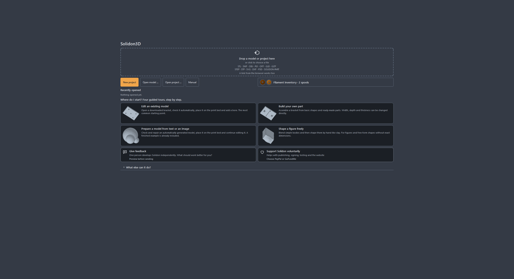
2. Drag a file onto the window. STL, 3MF, OBJ, GLB, PLY, OFF and STEP; plus SVG and DXF for drawings meant to be extruded. If the file records no unit — and STL never does — Solidon asks instead of guessing. When in doubt, millimetres: almost everything on the internet is in millimetres.
If the file is not on your disk yet, its address will do as well: drag the download link out of the browser and onto the window, or use File → Model from the web — the field is prefilled with whatever is on the clipboard. Catch the address of the model page instead of the file, and you will be told so.
3. Look at the report. On the right it says what is wrong with the model. Holes, duplicate faces, triangles facing the wrong way — with downloaded models that is the rule, not the exception. The most common findings carry a button that fixes them; where none is there, the report at least says what the finding means.
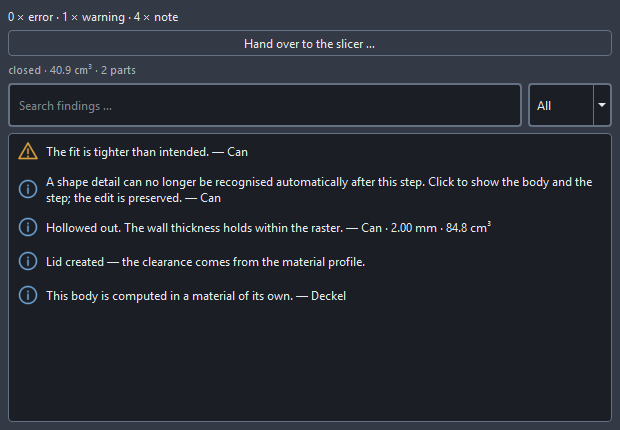
4. Repair. Usually the action suggested in the report is enough. The model stays what it was — the repair is a step in the history and can be taken back.
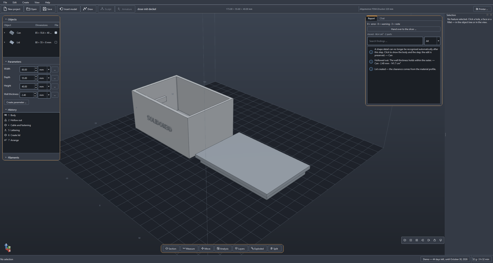
5. Point at the face the hole should go into and right-click. The menu names exactly those operations that suit this face — on a flat face, for instance, drill hole. A right-click always hits the most specific thing under the pointer, with no groundwork.
A left-click goes one step slower, and that is on purpose: the first one selects the whole part, the second the spot within it — a face, a hole. That is also how you get at the part itself, to move or rotate it. Esc steps back out again.
6. Enter the diameter and apply. Position and direction are already filled in, because the face was selected. Everything else — tolerance, resolution — sits behind More settings and is left alone as a rule.
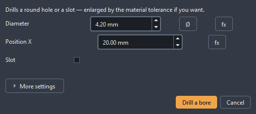
The result: the same body, one hole more.
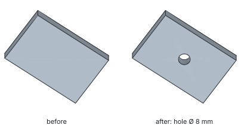
7. If the hole sits wrong, it is moved, not drilled again. A double-click on the step in the history reopens it. Change the number, apply, done. That still works next week.
8. Export. File → Export, then 3MF if your slicer can read it — otherwise STL. That file goes into the slicer, and the slicer turns it into G-code.
The first run needs no more than this. Everything else in this manual builds on it.
The window
Which part of the window answers which question.
Three zones, and none of them hides.
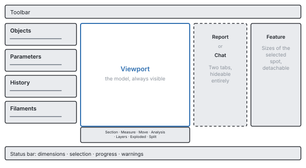
At the top the toolbar: new, open, save, Insert model, Draw — which swings the view square onto the drawing plane, the model stays put and steps back translucent —, plus Sculpt and Armature, both of which need a selected body and say so before you click. Escape comes back out of all three like out of any other tool. The buttons carry only their symbol; the name appears as soon as the pointer rests on one.
Below the model the tool strip: Section, Measure, Move, Analysis, Layers, Explosion, Split, Paint — left to right on Alt+1 to Alt+8. Most of them only look; Move, Split and Paint really change the model, and all three do it as a step in the history.
On the left sit the object tree, the parameters and the history one below the other, each section collapsible. The object tree shows what is in the scene; the parameter list the named dimensions of the project; the history every step that led to the current state.
In the middle the model. The left mouse button selects, the right or middle one rotates, shift and drag pans, the wheel zooms towards the pointer. Anyone used to something else from another program can switch to CAD or Blender bindings in the settings.
On the right either the chat or the report — never both, because nobody reads both at once. When a warning appears, the view switches to the report by itself. One key hides the whole column, and then the model is full screen.
At the bottom the status bar: dimensions of the selection, progress of a running computation, open warnings.
There are no modes. No switching between “editing” and “building”, no workbenches — there is one state, and that is the scene.
When you are looking for something, open the command palette. It finds every operation by name and shows the keyboard shortcut right beside it. That way you learn the shortcuts in passing instead of memorising them.
Looking before printing
What the report reports, what the analysis maps show, and when to look.
A model almost always looks fine on screen. Whether it can be printed is written elsewhere — in the wall thickness at its thinnest point, in the overhang past the limit, in the island that starts in mid-air. Five tools in the bar below the view answer that, and none of them changes the model.
Measuring (toolbar, Measure) takes two points and shows the distance. The pointer snaps to corners and edges, so you need not hit them, only come close. For wall thickness one click on a face is enough: Solidon sends a ray inwards and measures where it comes out again. A measured distance stays as a dimension until you remove it — that way three measurements can sit side by side instead of being remembered.
The section (Section) puts a plane through the model and shows what lies behind it. The cut face is drawn closed, not as an open hole — a cavity is recognisable as a cavity and not as a flaw in the display. The plane can be dragged through with the slider.
The analysis maps (Analysis) colour the model by a number. There are seven: Wall thickness, Overhang, Support needed and Curvature answer the question of printability. Mesh defects shows open edges and places where more than two faces meet — that is almost always where the cause sits when a boolean operation fails. Features shows what the recognition made of the body: which face counts as a hole, which as a pocket. Fits shows which faces take part in a fit and which of them is violated. The legend always names the range of values and where they come from — a map without a scale is a pretty picture. Clicking a warning in the report moves the camera to the spot.
The layer preview (Layers) shows the model as it falls into layers. The slider moves through them; what you see is Solidon's own layer analysis and not what the slicer computes later. Both sets of numbers stay separately labelled so that nobody mistakes an estimate for a measurement.
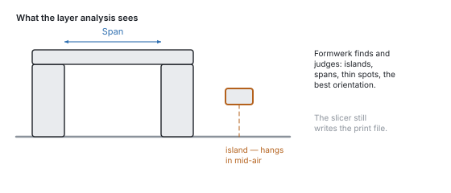
The exploded view (Explode) pulls several bodies apart so you can see what fits into what. It moves the display only — the stack and the export stay untouched.
The shadow under the model says something too. It falls for each piece separately, not for the whole body — a part that fell apart into several pieces during computation therefore casts several shadows before you see that in the mesh itself.
None of these tools creates an operation. They are glasses, not tools: you cannot break anything with them, and an undo has nothing to take back here.
Moving and painting
Moving, rotating and arranging objects — and assigning faces to a filament.
Two tools in the same strip really change the model: Move and Paint. Both keep the history's promise — every drag and every stroke is its own step, and Ctrl+Z takes it back one at a time.
Move switches on the handle in the picture, the gizmo: three arrows for moving, three rings for rotating, a cube for uniform scaling — labelled X, Y, Z and S. On release the drag lands in the history as Move, Rotate or Scale, with numbers that can be changed there later like any others. Grid snap and angle snap round every drag to the chosen step — one millimetre and fifteen degrees are the default, and zero means: no snapping.
While you drag, the number stands above the picture. Whoever wants it exact types it: the first digit takes over the drag, Enter applies exactly the typed value — without snapping, because whoever types means it exactly — and Esc discards the whole drag.
With a face selected, the handle sits on the face. Dragging it offsets the face along its direction, and the neighbouring walls grow with it (Offset face) — the 20 mm block becomes a 25 mm block, not a displaced box. Whatever is dragged across the face is discarded: a face only knows forwards and backwards.
The cube scales uniformly — for an exact target size there is Fit to size, for per-axis distortion the dialog of Scale. And whoever wants to put two parts together does not drag pixel-perfectly but uses Align to feature: face onto face, hole onto hole.
Paint turns clicks into brush strokes. Arm the brush (Brush armed), pick a slot and a radius, click the model — this changes material slots and with them the model, not merely the picture. On 3MF export this becomes the filament change for the printer. The edge angle stops the brush at edges so a colour does not run around the corner; 180 degrees means: across everything.
The history sees both exactly like a menu entry: the same operations, the same undo, the same chance to change your mind.
Draw
Sketching with constraints: lines, arcs, conditions, and what becomes of them.
For the outline no base body gives you. A block with a hole needs no drawing — a base plate with a cut-out that a power supply fits into does.
It starts at the top of the toolbar. The fifth symbol from the left is Draw — the buttons up there carry no labels, their name sits on the pointer. It swings the view square onto the drawing plane: you draw in the model, not beside it. What comes out of it you decide at the end — not beforehand. Escape gets you back out, like out of any other tool.
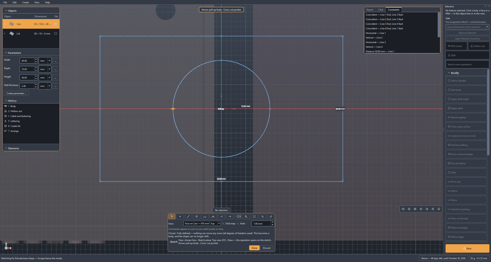
The plane first, then the line. XY lies flat like the print bed, XZ and YZ stand upright. With a body in the scene its planar faces are in the list as well — then you draw directly on the top of a part. The sentence next to the choice says how the print layers lie to it: on XY parallel to the drawing, on the upright planes across it — and across means that a horizontal line in the picture will be a seam later on. With a picked face its own tilt decides, and the sentence names it: flat, across or at a slant to the layers. Anyone who already has the face in view does not have to recognise it again in this list: right-click on it in the window or in the object tree, Draw on this face, done.
The tools and their keys: line L, circle C, arc A, point P, spline S, trim T. The digits 1, 2 and 3 switch directly between XY, XZ and YZ. Esc switches back to selecting and cancels an element you have started. The line runs on as a chain — the end is the start of the next one. A spline collects until you say it is finished: double click, Enter, or click the last point once more.
Finished outlines are ready to hand. Under Basic shape: rectangle (R), slot, circle, hexagon — and the two that would otherwise be handwork, bolt circle and hole grid. They come in as a drawing with constraints, not as a heap of points, and can be dimensioned afterwards like anything drawn by hand.
Looking, selecting, dragging. The same bindings apply as in the main window: the right or middle mouse button rotates, shift and drag pans, the wheel zooms towards the pointer. Anyone who rotates stays rotated — the view swings square onto the drawing plane once on entering and not again by itself. Fit to view (Home) brings everything back into the picture, and on opening it has already happened: an existing drawing fills the area, an empty sheet shows the whole build volume. With Select, dragging a point moves that point, and the solver pulls along whatever hangs on it. Ctrl while clicking collects, and that is no detail: Parallel and Perpendicular need two lines, Symmetric two points and an axis. The order of the clicks counts — “A parallel to B” is not “B parallel to A”. Del deletes the selection together with the constraints that hung on it; with the focus on the constraint list instead, Del removes the entry there. And Ctrl+Z applies here too, to the last stroke on the sheet and not to the last step in the history.
A click near an existing point snaps to it. That is more than convenience: the two points get a Coincident constraint and stay together, even when something else moves later. Two points that merely happen to share the same coordinates do not.
And where there is no point, the grid catches. The lines in the background follow the zoom: they step through 1, 2 and 5 and grow coarser as soon as they would sit closer than twenty pixels — a grid whose lines run into each other helps nobody. With Snap to grid on, every click falls onto the spacing currently shown, and onto the nearest one; truncated, every point would sit offset in the same direction. Existing points take precedence — where one is nearby it wins, because it brings a coincidence with it and the grid only a round number.
The spacing can be pinned. Type one in and it stays, however far you zoom; for a part thought out in two-millimetre steps that is half the construction. Turned all the way down the field reads Automatic, and the spacing follows the zoom again.
Dimension while you draw. With line and circle a measure field goes live after the first click, right at the pointer and not in the strip: type a length or a diameter, press Enter — the direction comes from the pointer, the number from the field, and it stays on as a constraint. Afterwards the same works with D across two selected points, and there an expression may stand: @width/2 binds the measure to a project parameter instead of repeating it.
Constraints hold the drawing, not the coordinates. Select something, then the button — or the right mouse button on the spot. There are ten: distance, coincident, horizontal, vertical, parallel, perpendicular, tangent, symmetric, fixed, and the reference dimension, which measures along without holding. Whatever does not fit the selection is greyed out. On the right they all stand in a list; whoever runs the pointer over an entry sees the points it holds light up, and Del takes it away.
![The sketch mode: at the top the drawing tools with their keys — line L, circle C, arc A, spline S —, below them the plane choice with the note on how the layers lie to it. In the drawing area a dimensioned rectangle of 40 mm with a circle in it, the edge of the build volume dashed, a snapped point marked. On the right the list of constraints — horizontal, perpendicular, distance, coincident, tangent — with the points each one holds. At the bottom the status line: determined, every degree of freedom is taken.](../handbuch/en/sketch-editor-dark.svg)
At the bottom stands how firm the drawing is. Determined means every number is taken and nothing moves any more. “Four degrees of freedom are still free” means four things are not settled yet — the sketch still works, it is only still movable. If two measures contradict each other, Solidon says which, and the last valid position stays put: an impossible constraint does not destroy what has been drawn.
Changing without drawing again: Trim cuts away the half you click, Extend lets it grow, Offset (O) lays a contour beside it at a distance — negative goes inwards —, Mirror throws the selection about the X or the Y axis. Construction (X) turns a line into one that carries constraints but forms no profile: the centre line something hangs on symmetrically should not be extruded along with it. And Project brings the edges of the existing bodies on this plane into the drawing — the way to line something up on an imported part instead of measuring it off and typing it in.
The edge of the build volume is drawn in — dashed, with its size written on it, and whoever draws beyond it reads so on that same line: the sketch sticks out beyond it. That makes the drawing area the earliest place at which it shows that a part does not fit on the bed — earlier than any report. With a small part the frame lies outside the picture, and that is deliberate: it fits anyway. Once the drawing grows past the plate, the frame comes along into view by itself.
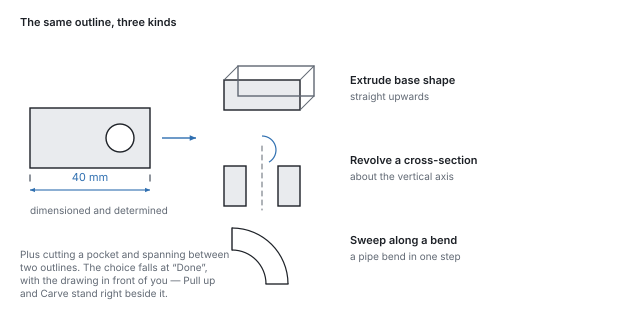
Finally Solidon asks what it should become. The Done button shows the five kinds with a sentence each: extrude it, cut it in as a pocket, revolve it about the vertical axis, sweep it along a bend, or span it between two outlines. Back to drawing is there too — it throws nothing away, it opens the same drawing again.
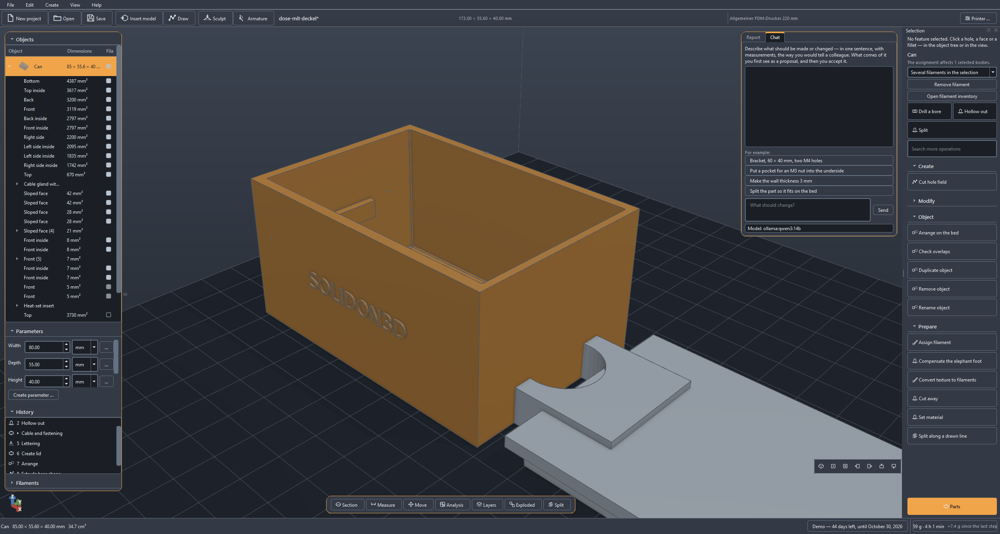
Afterwards the drawing is a value like any other. It stands as a parameter of the operation in the history, and a double click on the step opens it again through Draw …. A line that sits two millimetres off gets moved — the operation above it recomputes, and the rest of the project stays as it was.
The outlines go into the second geometry kernel as exact curves: a drawn circle becomes a round cylinder and not a polygon with many corners.
The four ways
Adapt, construct, generate, sculpt — four ways into the same scene.
Almost every task takes one of four ways. Each has an example project ready — on the start screen, and each opens with a tour: on the right it says, step by step, what to try, and the tour notices by itself when a step is done.
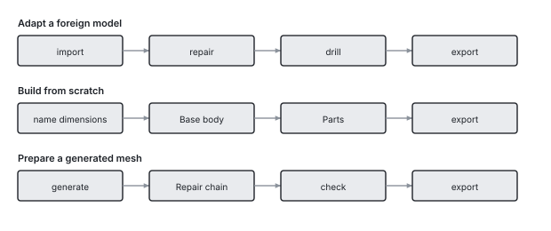
Way 1 — adapting a foreign model. Something downloaded that almost fits: import, repair, drill, export. The most common way, and the one where the repair counts.
Way 2 — building from scratch. Something new out of primitives, parts and drawings, with named parameters: width, depth, thickness. Change a number and the part changes. Whatever no primitive gives you is drawn — the Draw symbol at the top of the toolbar, described in the chapter before this one.
Way 3 — preparing a generated model. What an image model delivers is a surface, not a construction. It goes through the repair chain, and holes come afterwards as steps of their own — not by measuring the mesh.
Way 4 — sculpt a figure. A shape that cannot be dimensioned: roughed out from primitives, blended together and then shaped by hand. Its own chapter is further down; what sets it apart from the other three is that here a gesture counts and not a number.
Sculpt
Sculpting by hand — and why a whole session stays one step.
Some shapes cannot be dimensioned. A handle meant to sit in the hand, a figure, a grown transition — that is what the brush is for.
The way there has three stages, and the first is happily skipped. First a rough shape from primitives, blended together (Blend together in the Modify menu); then Even out the triangles, so that vertices sit everywhere alike; then Sculpt. Skip the second stage and you paint on a mesh that cannot follow your brush — the bar says so as soon as the session is open.
The whole session is one step in the history. Not one step per stroke: a figure is several thousand strokes, and a history with four thousand entries is none. Ctrl+Z takes back one stroke during the session, the whole session afterwards.
Six tools. Add and Carve are the same with opposite sign. Smooth, Inflate and Flatten read what lies before them and therefore cost one extra pass each — the bar shows how many. Pinch pulls towards the stroke centre and makes edges.
Order does not matter within a stage. Two strokes over the same spot add up onto the original surface rather than the second sitting on the result of the first. If you do not want that, set Start afresh — then the next stroke begins on what is there. The switch applies to one stroke.
Symmetry can be changed afterwards. It sits on the operation, not on the single stroke: a finished session can be mirrored with it. Mirroring is about the object's origin — not its centre of mass, which wanders while sculpting.
When this tool is not the right one. On a part still being dimensioned: a stroke sits at a place in space, and changing the shape underneath pulls the surface out from under it. For a transition between two bodies Blend together is better — three numbers instead of a hundred strokes, and editable at any time. And anyone modelling a portrait bust is better served by a program built for it; six brushes are six brushes.
What this program can do for it and the others cannot: while you sculpt, wall thickness runs along. Spots that are too thin stand as a number in the bar, before the slicer finds them.
The history
Why every step stays editable, and what holds a transaction together.
Every operation sits in the history, and there it stays changeable. That is the difference everything else hangs on: a model here is not a mesh of triangles but the list of steps it came about through.
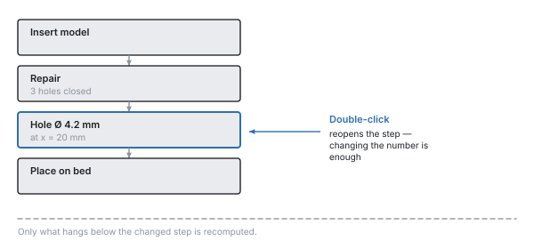
A double-click on a step reopens it — with the values that are in the file. To move a hole two millimetres, change the number; only what hangs below is recomputed. Changing it afterwards is likewise reversible: Ctrl+Z restores the previous value, like with any other step.
Several steps can be selected at once — Ctrl or Shift while clicking. That is exactly the slice a part of your own gets (Your own parts), and without a selection the whole stack applies.
“Edit this step” also sits on the feature itself, in the context menu in the view and in the object tree: the way back from the result to the step, without hunting for the right row in the history. For that the object tree groups what came from a part under its name — six fillets stay with their pegboard hook this way, instead of sitting in a flat list.
Undo takes back a whole transaction, not half a step. A proposal from the chat is exactly one transaction — an undo takes it back completely.
Two limits are deliberate. Steps taken back fall away as soon as a new one arrives: there are no branches. And a change that alters the number of objects while later steps work with them is refused — the new bodies are not the old ones, and an error at the end about a number at the beginning is one nobody can trace.
Clicking sets things up. Select a face in the window and then call an operation, and position and axis are already filled in. The size is not: a countersink takes the head of the screw, not the diameter of the hole it sits on. With a hole that has been clicked, the dialog also says which standard size the measured diameter matches — and where none matches, it asks instead of inventing one.
Parameters and expressions
Named dimensions instead of numbers in the model, with expressions between them.
A project has named parameters — width, depth, wall —, and operations may compute with them instead of with fixed numbers.
Why that is more than convenience. A number that sits in seven places is seven numbers: change it and you change six of them and miss the seventh. A parameter is one number in one place. Turn width, and everything that depends on it follows in one go — the bore in the middle stays in the middle, because =@width/2 is written there and not “35”.
This is how you create one. On the left under Parameters, click Create parameter, enter name and value.
And this is how it gets into a dimension. Next to every number field there is an fx button. It switches the field over: off there is a number with spin buttons, on there is an expression. Only then does the field take =@width/2 — the equals sign turns the field into an expression, the at sign refers to a parameter. Type @ and the field suggests the names of your parameters, and below it says what is allowed.
The name in the expression is not always the one in the list. A parameter has the name it was created under and a label that may be translated — the two need not be the same word. The suggestion list shows the right one; whoever uses it never has to know the difference.
Limits, unit and expression can be changed afterwards. Right-click on the parameter, Change limits … — and that is reversible like any other change. An upper limit set too tight otherwise jams a field without a word.
What may appear in an expression: the four basic operations, brackets, min, max, abs, round and references to other parameters. =@width/2 - @wall is allowed, =max(@width, 40) as well.
Nothing else is allowed, and that is deliberate: the expression is computed by an evaluator of its own, not by Python. A project file is a file and not a program — it travels between people as an error report, and what is in it must not execute anything. A language model that wrote the expression changes nothing about that.
Circular references are detected and named. If a points at b and b at a, Solidon says so instead of computing to the stop.
Everything is computed in millimetres and double precision throughout. Only what is displayed gets rounded — what you read as “40.00 mm” is a number with all its digits in the core.
Material, tolerances, fits
Where the clearance a lid needs comes from — and why it is not estimated.
The piece that sets Solidon apart from a slicer.
A printed part is never as large as drawn. Plastic shrinks as it cools, a hole of 5 mm comes out narrower, and the bottom layer is squashed wider than all the others. Anyone who wants to push two parts together has to allow for that — and that is exactly what Solidon takes off your hands.
The clearance is in the material profile, not in the model. To put a pin into a hole you do not enter 0.2 — you say fit, and the number comes from the profile of the material being printed.
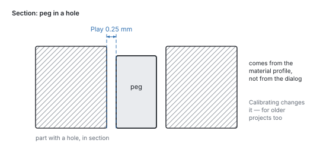
That is why calibrating works backwards. Under Edit → Calibrate material the measured value is entered. From then on it applies to every fit — including those in projects that existed before.
Measured is printed, not guessed. The tolerance ladder puts pins and holes with stepped clearance on one plate: print once, try, and the value stands. The wall ladder and the overhang fan do the same for the minimum wall thickness and for the angle at which this printer really needs supports — instead of the rule of thumb of 45 degrees.

The first layer is a special case. It is pressed against the bed and spreads outwards as it goes. For a fit that sits at the bottom of the part, that is the difference between “goes in” and “does not go in”.
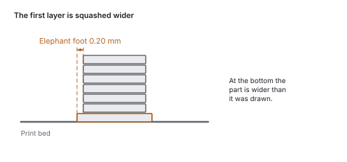
The test piece cuts a cube out around one spot instead of rebuilding it. What gets printed is the real geometry with the real tolerance: two minutes instead of two hours, and the result holds for the part.
A scene may have several materials. A TPU gasket in a PETG housing shrinks differently and wants more clearance. With set material the single body gets its own profile, and tolerances, elephant foot and fit checking compute with it.
The parts
Tested connections from the library instead of self-built geometry.
Sinking a hexagon into a wall so deep that an M4 nut fits and the screw still bites is half an hour of work — the first time. The part library takes it off your hands: click a face, pick a part, pick a size. Without a selected body the catalogue stays locked and says why — browsing it still works.
The dimensions come from a table, not from memory. What across-flats an M4 hexagon has, how deep a heat-set insert sits, how wide a living hinge may be — that is looked up, not estimated.
Nut trap — the pocket for a hex nut that is dropped in during printing. The most common way to get a load-bearing thread on a printed part.
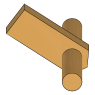
Heat-set insert — the stepped bore for a brass insert that is melted in with a soldering iron. More work than the nut trap, but it can be undone as often as you like.

Snap fit — the springy arm that gives way when joined and latches afterwards. A lid that holds without a screw.

Living hinge — a section so thin that it bends instead of breaking. The joint is printed along with the part, there is nothing to assemble.

Pegboard hook — one to six hooks directly on the part, in the grid of a SKÅDIS pegboard; a back plate only if you ask for one. In from the top, then pull down: a springy latch tongue clicks in and holds the part firmly even when someone pulls on it. To take it off, the tongue has to be pressed down through the slot — anyone who removes the part often switches it off and gets the plain hook for lifting off instead. It prints lying down, so that the tongue springs across its layers.
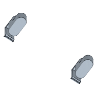
Hinge eye — a tab with a hole. Two of them and a dowel pin make a joint that turns; the living hinge above bends. Explicitly half a hinge.

Corner gusset — the triangle in an inside corner that holds two walls at a right angle. For a single soft wall the stiffening rib is the one.

Foot — a printed foot or the pocket for a bought rubber one, as you choose. The chamfer points down so that the elephant foot of the first layer squeezes into empty space.

Cable clip — the bow on a face whose opening is narrower than the cable. It guides but does not hold against pull; the grommet does that.

Then there are the screw hole, magnet pocket, cable grommet, rib, keyhole, printed thread, T-slot tongue, wall mount, snap fit, dowel pin and bore, snap connector for a seam and the test pieces from the previous chapter. The catalogue sorts them into groups and shows a picture of each — a library you cannot see does not exist for the user.
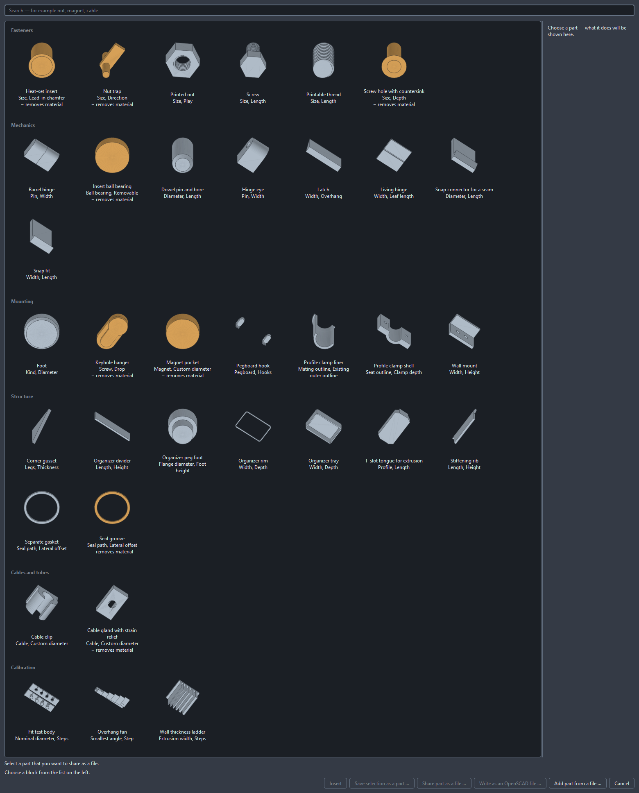
Every part stays as changeable as any other operation. It sits in the history, its dimensions can be corrected later, and the places it attaches to keep their names.
Your own parts
Storing a part you built yourself so that next time it is already there.
The bracket for the workbench took an evening. Next time it should be a menu entry — with an adjustable width, because the next board is thicker.
First choose in the history what should come along. Several steps can be marked there — Ctrl or Shift while clicking, as everywhere —, and exactly these travel into the part. Without a selection the whole stack applies, and that is the common case: whoever has just built their part usually means all of it anyway. The recipe dialog writes into its header what it received, so that this default does not apply silently.
The way starts in the part catalogue (File → Part catalogue …, Ctrl+K), not in the parts menu: there you find Save selection as a part …. What you built becomes an entry like the nut trap or the snap fit — with a preview image, with fields to adjust, and with places that something can be aligned to later.
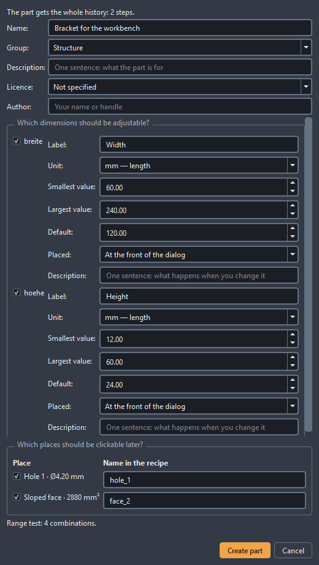
You need project parameters first. That is the one condition it otherwise fails on: exactly what has a name in the project becomes adjustable. Whoever wrote the width of their bracket into the box as a fixed number gets a part that can do exactly one width. Create the values that should change as parameters beforehand and bind the dimensions to them — the chapter Parameters and expressions shows how. The button in the catalogue stays locked until that is done, and says next to it what is missing.
The dialog asks five things. A name for the part in the catalogue. A group it is filed under. A description that sits in the catalogue's detail column. For every parameter, whether it should be adjustable — with label, unit, smallest and largest value, default and a sentence about what happens when you change it. And for every detected feature, whether it should be clickable later: a hole another part is aligned to, a face something is placed on. Both are mandatory, not merely offered: without at least one released dimension and at least one released spot, Create part stays locked, with the sentence saying what is missing.
Creating it computes, it does not just save. The part is built once at every corner of the range you gave — smallest width with largest height and so on. If no usable body comes out anywhere, that is shown on the entry in the catalogue. A part that falls apart at 8 mm is better known before it is first inserted than after.
It belongs to you and stays on this computer. Nothing is uploaded, nothing is shared. In the catalogue it sits next to the supplied ones with a marker. If you pass on a project that uses it, it travels along as a recipe — as a list of steps and values, not as a program. If your computer already carries a part of the same name, yours wins and the one that travelled gets a name of its own.
Changing means saving again. Save under the same name — the button then reads Replace part, and file, catalogue entry and computation are swapped together. A recipe has a version that follows from its content. If you later open a project that used an older one, it tells you — the old version travels inside the project and sits as its own entry in the catalogue, and you decide which one applies. If nothing changed, nobody says anything either.
Onto the bed and out
From the finished model to the handover to your slicer.
Arrange on the bed lays the objects out side by side and starts a new plate as soon as the current one is full. Whatever does not fit even then is not left out but reported.
Too large for the bed? Split cuts where you point; Split automatically cuts until every piece fits. The cut plane is searched for rather than guessed, two dowel pins go into every cut face, and each cut stays a number you can change afterwards.
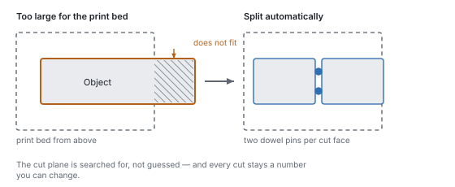
Whatever grows outwards at an angle needs supports at some point. How much of an angle depends on the printer and not on a rule of thumb — which is why the overhang fan measures it.
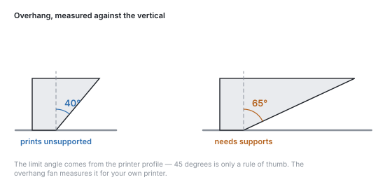
Walls that are too thin do not print. Less than two beads side by side carries nothing and tears as soon as you take the supports off.
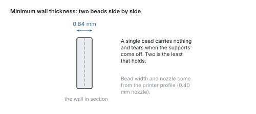
Export goes to STL, 3MF or STEP. 3MF is what slicers prefer, and it carries the material slots along as colour groups; STL knows no colour and loses them accordingly. STEP is there for exact bodies, with real faces and edges. Plus OBJ and PLY, for programs that require one or the other.
For showing there is GLB. Not for printing — it knows no unit — but for sending: colours and name travel along, and the recipient turns the part in a browser without installing anything.
The slicer stays outside. The layer analysis finds and judges — islands, spans, thin spots, the best orientation — but the slicer writes the print file. Where both give numbers, it is always stated which came from where.
When the part does not fit the bed
Splitting, pinning and arranging when the build volume is not enough.
A build volume is finite, and the part you need sometimes is not. Then it gets split — and the question is not whether, but where and how the halves come back together.
The shortest way is the Split tool at the bottom of the tool strip (Alt+7). Two clicks on the part draw a line, and it is cut between them — straight into the screen. Anyone who can see where the seam belongs no longer has to translate that spot into a coordinate. The Prepare for plugging together box is ticked from the start: pins into one half, the matching holes into the other. Beside it stands what holds them:
- Round prints cleanest and needs two, or the halves can be twisted against each other.
- Hexagon holds against twisting on its own.
- Dovetail also holds against being pulled apart across the seam — it is narrower at the back than at the front.
- Snap clicks in: a spring arm in one half, a pocket with a catch in the other. It holds without glue, and the halves come apart again. For that it needs room — the seam must give at least 5.4 mm, otherwise the arm would be too short to spring. If it is narrower, round dowels it is, and the report says why.
Prepare → Split automatically takes the search off your hands too. The parting plane is searched for, not guessed: through the same layer analysis as the orientation search, and three things are weighed. A seam made of one contour is better than one that falls apart into five thin webs. A prismatic run — the cross section barely changes over a millimetre — glues more cleanly than a slope. And the halves should be of similar size. The number of contours weighs heaviest: a seam in several webs is worse than any imbalance.
Two dowel pins go into every cut face. Their diameter comes from the face, their clearance from the calibrated material profile — not from a guessed number. A fit pair is created for every pin, and it is checked on every evaluation. Two pins rather than one, so the halves cannot be twisted against each other.
Every cut is an operation of its own. The parting plane stays a number you can move afterwards, and an undo takes back one cut instead of the whole split.
The “Explode” slider below the view pulls the parts apart for inspection — it only moves the display. What the stack says and what gets exported stays where it is.
If you would rather type the plane than point at it, use Prepare → Split and enter axis and position. The same operation, only without the search in front of it; zero pins means: only cut.
The names of the halves say which is which. After pinning, the object tree shows “… A · Pins” and “… B · Holes” — on export the file name is the only clue as to which of the two parts you are holding.
Trying instead of guessing: variants and calibration
Printing several dimensions side by side and adopting the measured one.
The number that decides a fit is the clearance — and it depends on the printer, the material and the nozzle. You guess it once; after that you measure it.
The way there is a test piece. Under Parts → Calibration → Fit test body a row of pins and bores appears with graded clearance — four steps by default, starting at 0.10 mm and growing by 0.05 mm each, so up to 0.25 mm. Both can be changed in the dialog if that range does not fit. Print it once, try them all, remember the value that slides home snugly.
That value belongs in the material profile, not in the model: Edit → Calibrate material. Because every tolerance in the program is a reference and not a number, a part made before the calibration computes with it too. A lid from last week fits better after the entry, without anyone touching it.
The same exists for wall thicknesses (wall ladder) and overhangs (overhang fan) — the two other numbers that otherwise get estimated.
When a number depends on the part rather than the material, the variant generator helps: Edit → Generate variants runs a project parameter through a range and lays the versions out side by side. Five handle diameters on one plate, one print, one decision. The stack stays untouched — the variants are an output, not a change to the project.
The chat
How to talk to the agent, what it sees, and what a proposal costs.
The chat calls the same operations that sit in the menus — it is a second hand on the same tool and not a second way past it.
Two things follow from that. Every proposal is exactly one transaction: an undo takes it back completely, never halfway. And the chat computes no geometry — it picks operations and values, the computing happens in the program.
The sequence is always the same. You write what you want. The chat answers with a proposal — a list of operations, not yet carried out. The view shows in blue and orange what would be added and what would disappear. Only Apply enters it into the history; Discard leaves nothing behind.
It was given three rules, and they are not up for negotiation: parts before shapes built by hand, named parameters before typed numbers — and ask before guessing. If your request has two readings, a question comes back and not a result.
What it sees is not the raw history but a digest: dimensions, detected features, project parameters, the current selection, the report. A withdrawn contribution counts as discarded — after an undo it no longer argues from a state that no longer exists.
Every transaction says where it came from (§26.4): model, version of the system prompt, version of the rule set. Anyone who wants to know in six months why a bore sits there finds the answer in the history.
It needs a model: either a key of your own (Edit → Set up the chat, kept in the system keychain, never in the project file) or a local Ollama. For the tool calls it has to be large enough; below 7B they fail reproducibly.
Everything else in Solidon works without a language model. Without a key the chat is greyed out and says why in one sentence — nothing more happens.
Having a model generated
A mesh from text or an image — and what it takes afterwards to make it printable.
The third way (§2.2): you describe a part or drop in a picture, and a generator turns it into a mesh. File → Generate a model.
That is not computed in Solidon but in a local ComfyUI on port 8188. If none is running, the entry stays greyed out and says why; everything else keeps working. Which nodes are used is written in two files beside the program — if you have a different generator, you swap the file and not the source.
What comes back is a surface, not a construction. That is the most important sentence about this way. A generated mesh has no bores, no fits and often no watertightness — it has a shape. Bores and fits are created afterwards as operations of their own, not by measuring the mesh.
The models are not ours, and neither are their licences. Which model ComfyUI uses is your decision — Solidon ships none. The shipped workflow uses TripoSG, whose MIT licence leaves nothing open here; the more widespread Hunyuan3D is expressly not licensed for the European Union. The workflow names roles rather than file names: putting a different model to work means installing it, nothing else.
What is generated becomes a source, not an operation. A generator is not a function: the same request delivers something else after a model change. The bytes therefore sit in the project like a dropped-in file, and the stack above them is the ordinary one — Load, then Repair. Prompt and seed sit in the source, so the file says where the geometry came from.
The repair chain runs without asking, but as a step of its own: visible in the history, visible in the report, undoable. Generated meshes are rarely closed, and what they need is always the same — close holes, weld points, straighten normals.
The same seed delivers the same result, as far as the model on the other side allows. It sits in the dialog and is saved along.
Setting up additional programs
The three programs Solidon can use — what each one brings, and what is left to do after installing.
None of these is required. Without all three the whole core path still runs: read a model in, change it, check it, export it. What is missing are individual functions — and this page says which.
The list is under Help → Additional programs. Every row names the purpose, the state and the location; where Solidon can install it itself, there is a button. Installing only happens when somebody presses it.
On Windows this goes through winget, on macOS through Homebrew, on Linux through Flatpak — and always without administrator rights. If the package manager is missing, the command to copy is next to it, along with the maker’s page.
Where something sits in an unusual place, Give location … helps: no search procedure finds a portable installation on a second drive, and that entry wins from then on.
The slicer
For the print file and the cross-check from the G-code. Every one of the usual ones is recognised — PrusaSlicer, OrcaSlicer, ElegooSlicer, BambuStudio, Cura. Solidon also reads its printer profile and suggests, on first start, the printer the slicer last had.
Ollama — for the chat without a key of your own
Here there are three steps, and the first is the smallest. Installed, Ollama brings no model with it and does not necessarily run — Edit → Set up chat does both:
1. Is it running? The dialog says so in one sentence. If it says “installed but not running”, a button starts it. If it runs on another machine, its address belongs in the list of additional programs. 2. Fetch a model. The selection names what is installed, and below that the proven ones with their size. Fetch model downloads it — five to nine gigabytes, with progress and a way out. A cancelled download continues on the next attempt. 3. Check tools. The most important step, and it answers two questions: whether a model really calls tools is told neither by its size nor by its vendor. The probe makes a real turn. If it says “writes its calls as text”, the chat does answer but carries nothing out — then a different model helps.
And it measures how fast this machine does it. Ollama only uses certain graphics cards; with all others it computes on the processor, and that is not another speed but another order of magnitude — a measured barely eight tokens per second while reading in, on a machine with Intel Arc graphics. Solidon’s instructions are about 19,000 tokens long; there it takes forty-one minutes before an answer even begins. If the probe says so, that is not a fault but the information: on this machine the local way is not worth it, and a smaller model changes little about that.
There is a second local way, and Solidon does not set it up: for Intel graphics there is IPEX-LLM, for AMD ROCm, for both OpenVINO — each of them is an installation of its own with its own traps, and none is offered by Ollama itself. Whoever takes that on gets their card used; whoever does not takes a key for a hosted model. Both are defensible, and everything but the chat runs without either.
qwen3:14b has proven itself: four out of five tool calls hit, and for that it needs a graphics card with 16 GB. Smaller models are faster and hit less often; below seven billion parameters the calls fail reproducibly.
A local model is slower and less accurate than a hosted one. For short instructions it is enough; for long turns a key of your own is worth it, and it then lives in the system keychain.
ComfyUI — for generating from text or an image
Here too, installed is only half of it. ComfyUI needs the nodes the workflow addresses and the model they load. Solidon puts both in itself: in the list of additional programs, the ComfyUI row carries Set up nodes and model ….
The short way goes through the generation dialog itself. File → Generate model says how far the generator is, and tells three states apart: none is running, one is running without the nodes, or everything is ready. In the middle one the set-up button stands right next to it — you do not have to let it generate first to find out that something is missing.
The dialog finds ComfyUI itself. The desktop edition from comfy.org it does not have to guess — it records where it installed to, even for a folder chosen by hand. The portable edition you unpack yourself; if it sits in an unusual place, the folder has to be given — the one holding custom_nodes and main.py.
Then five steps run: put the nodes in place, fetch the TripoSG source, fix two places in it, add the missing packages — and look whether ComfyUI can load the nodes. The last one costs two seconds and is the one that counts: without it the setup reported “done”, and the error came only when generating. If wanted, the model afterwards, about 7.5 GB — if the connection breaks, another run continues where it stopped.
Restart ComfyUI once afterwards. It reads its nodes at start-up; without the restart Generate model stays greyed out even though everything is in place.
For the way via text an SDXL model under models/checkpoints is added — that is ComfyUI’s own business. For the way via an image none is needed.
How long it takes is decided by the graphics card. On an RTX 4080 it is thirteen seconds per body; on Intel Arc graphics without CUDA, a measured two minutes. Both work, and Solidon waits as long as ComfyUI computes — what breaks off is a fault and not slowness, and then ComfyUI’s own sentence stands in the dialog.
And what comes along
OpenCASCADE for exact edges and V-HACD for the hint where a body falls apart by itself are in the installer. Anyone running Solidon from source finds them in the same list and installs them from there.
Surfaces and fills
Patterns as real geometry, lattice fills and hollowed bodies.
A knurl for the grip, a honeycomb for looks, a lattice instead of solid material — all of it is real geometry, not a texture in the picture. What the slicer gets is what you see.
Eight patterns are on offer — rib, wave, straight and diamond knurl, honeycomb, dimples, Voronoi and noise. Knurling gives grip, honeycomb and rib are ornament, Voronoi and noise hide the layer lines. The dialog shows a preview beside the list, drawn from the very outlines that get printed afterwards.
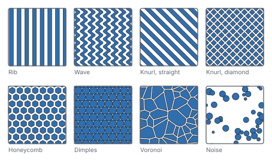
Apply texture embosses a pattern onto a face, raised or engraved. Two numbers decide whether it can be printed: the pitch must be wider than two nozzle lines, the depth higher than one layer. Solidon checks both before it computes — an embossing finer than the printer simply disappears, and otherwise you notice that on the finished part.
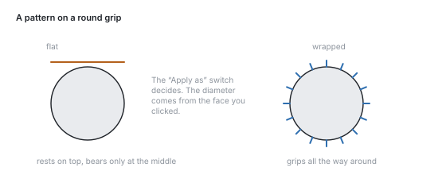
On a round part the pattern is applied wrapped. Laid on flat, the field would meet the cylinder only at its middle and stand in the air at the edges.
Fill with lattice replaces the inside of a body with a structure — gyroid, honeycomb or cubic. This is not the same as the slicer's infill: this one belongs to the model, travels with the file and can be measured. The wall thickness of the structure is checked against the nozzle, just like the texture.
Remote control
Another program operates this installation — local, switchable, reversible.
Another program on the same machine may operate Solidon — over MCP, the same interface Claude Code and similar tools use. It calls exactly the operations that are in the menus.
It is off until you switch it on. The switch is in the settings, together with the port. Solidon then listens on 127.0.0.1 and nowhere else: the interface cannot be reached from another machine, not even on your own network.
Whatever arrives is a transaction like any other. Ctrl+Z in the window undoes it, the history shows it, and the entry says that it came from outside.
One thing never travels over the wire, and that is deliberate: anything that looks like a file path. That would mean a foreign program deciding what gets read on this machine.
In the other program it is entered as a server at http://127.0.0.1:8787/mcp.
Which tools exist is written in this manual. Every operation in the chapters that follow is one — with the same parameters, the same limits and the same defaults the dialog shows. There is no separate interface listing for that reason: it would be a second version of the same information, and after two months it would say something else.
Activation
Trial period, licence key, and what still works after it ends.
Without a key, Solidon runs for fourteen days as a trial. After that everything that reads stays open — opening models, viewing them, measuring them — only the four actions that write need a key: a change to the model, an export, the handover to the slicer and the chat. Projects stay where they are, even without a key.
A time-limited demo is a different case. It ends on a fixed day and does not start again afterwards — the status bar names the days remaining from the start, not just shortly before the end, so that nobody who began late is caught by surprise.
A key is entered, not an account created. The way there is Help → Unlock Solidon …; the key lands in the system's keychain, never in a project file. Fewer than three days before the trial ends, a line in the status bar says so.
When something goes wrong
The cases that come up most at the start, with what is behind them.
The cases that are most common at the start — what is behind them and what helps.
“The model is not closed.” Faces are missing from the file, or triangles face the wrong way. With downloaded models that is normal. Repair in the report closes small holes and turns faces around. If a whole wall is missing, no repair can guess it — then the file is broken and another source is the shorter way.
A boolean operation fails or eats too much. Boolean operations need clean input bodies. Solidon tries several methods in turn and says afterwards which one carried it. If it says voxel, the computation was coarse and accuracy was lost — then repair first and combine again.
Two faces lie exactly on top of each other. The classic case in which a difference removes nothing, or flickering appears. The remedy: let the body being subtracted stick out by a hundredth of a millimetre. The parts do this by themselves.
The part does not fit on the bed. Split automatically cuts it until every piece fits and puts dowel pins in the cut faces. If the printer profile holds the wrong build volume, that is the real cause — it is worth checking.
The fit is too tight or too loose. Do not change the model, measure instead: print the tolerance test body, try it and enter the value under Calibrate material. It applies to every fit from then on, including those in projects already built.
A step can no longer be changed. If a change would alter the number of objects while later steps work with those objects, the evaluation stops. That is deliberate: the new bodies are not the old ones, and a step that quietly ended up somewhere else would be worse than a message. Take back the later steps, change it, build them again.
Fillet, chamfer or STEP are greyed out. These operations need real edges from the second construction kernel, and it travels along with the installation — this is about the kind of body, not a missing program. Either the body was never exact: then the Exact (B-Rep) checkbox in the create dialog helps, afterwards also in the step's dialog. Or a mesh operation in between turned an exact body into a mesh — then no checkbox helps, only the order: take back the steps from there, apply the wanted operation and rebuild the rest. Solidon names which of the two applies in either case.
The chat does not answer. It needs a language model — your own key or a local Ollama. Small models below about seven billion parameters fail at the tool calls, and they do so reliably. Everything except the chat works without one.
Everything is sluggish. While you work, draft quality is running; the fine computation comes at export. With very large meshes it helps to simplify early — the triangle count is in the object tree. When a project opens, a loading indicator settles over the view, so that the empty scene does not look like an empty project.
As a rule: no error in Solidon stops at the observation. If there is no action beside it that carries on, that is a bug in Solidon and worth a report. The way there is Help → Send feedback: screenshot, log and, if you like, the running session go along, the preview shows all of it beforehand, and one button sends it to support. If you would rather hand nothing over, the same dialog stores a folder on your own machine instead.
During the demo Solidon asks by itself. After half an hour of work — only minutes in which you did something are counted — a card settles over the view and asks how it is going. It holds nothing up and waits until you look. Give feedback opens the same dialog as Help → Send feedback, with three fields in it: how well you are getting on, what worked well, what was missing. No field is required, the preview shows everything beforehand, and nothing goes out without your click. No thanks holds for good; if you simply leave the card standing, you see it at most three times.
Glossary
The terms that appear in menus and messages, briefly explained.
The words that turn up in Solidon, in slicers and in printing forums — briefly explained.
Mesh — a body as a shell of triangles. STL and OBJ contain nothing else: no circles, no dimensions, only triangles.
Closed (watertight) — the shell has no hole, inside and outside are unambiguous. Only a closed body can be combined and printed reliably.
Operation — one working step: drilling, filleting, splitting, placing a part. In Solidon geometry comes about this way and no other.
Transaction — everything one undo takes back at once. A proposal from the chat is exactly one, even when it consists of five operations.
Parameter — a named dimension of the project, width for instance. Operations may compute with it; when the value changes, everything hanging off it changes.
Part — a ready-made construction element from the library, with dimensions from a table rather than from memory.
Fit — how tightly two parts sit inside one another. The clearance needed comes from the material profile.
Clearance — the gap between peg and hole so that the two can be joined. Too little jams, too much wobbles.
Press fit — interference instead of clearance: the part is pressed in and holds by itself.
Tolerance — the amount by which a dimension deliberately departs from the nominal size so that the printed result is right.
Shrinkage — plastic contracts as it cools. That is why a printed part is slightly smaller than drawn.
Elephant foot — the lowest layer is pressed against the bed and spreads outwards. The part is wider at the bottom than intended.
Overhang — a face growing outwards at an angle. Beyond a certain angle the layer below has nothing left to rest on.
Supports — material printed under an overhang and broken off afterwards.
Island — an area of a layer with nothing underneath it. Without a support the printer prints into thin air there.
Bridge (span) — a horizontal run between two points of support. Short bridges succeed without support, long ones sag.
Nozzle — the opening the plastic comes out of, usually 0.4 mm. It limits how fine a detail can be.
Extrusion width — how wide a laid bead becomes. Two beads side by side are the thinnest sensible wall.
Layer height — how thick one layer is, usually 0.2 mm. Smaller means finer and slower.
Slicer — the program that turns the model into the print file. Solidon is not one and replaces none.
G-code — the finished list of instructions for the printer. It comes out of the slicer.
STL — the most widespread format: triangles only, no unit, no colour.
3MF — the modern successor: with unit, colours and several objects in one file. Where the slicer can read it, it is the better choice.
STEP — a format with real faces and edges instead of triangles. What classical CAD programs exchange.
GLB — the format of the viewers: triangles with colours, in a single file that every browser opens. Meant for showing, not for printing.
Report — the list of what stands out about the scene, each entry with an action that fixes it.
Material slot — the assignment of a face to a material or a colour for multi-material printing.
What Solidon judges by
These rules are in front of the agent on every request. They are the reason it takes a screw hole from the table instead of estimating one — and why it asks instead of guessing.
Version: 3
Minimum wall thickness
No wall thinner than two extrusion widths. The value lives in the printer profile and is never written into the operation as a number.
Chamfers instead of overhangs
Beyond 45 degrees of overhang, add a chamfer rather than accepting supports. The layer analysis says where the overhang is.
Tolerances from the material profile
Create fits as a pair and state the tolerance as auto:<material>. A fixed number does not survive a calibration.
Main dimensions as parameters
Every dimension the user might later change becomes a project parameter with a telling name. Stray numbers inside operations are a dead end.
Overlap for boolean operations
Always allow 0.01 mm of overlap for unions and differences. Coincident faces are the most common cause of broken results.
Holes larger than nominal
FDM prints holes tighter than planned. Enlarge the bore by the compensation value from the material profile, not by a guessed number.
First layer
Account for the elephant foot from the material profile whenever the first layer has to hold its dimension.
Parts before primitives
Search the parts library first, construct second. A part brings its features, its limits and its tests along.
Ask before guessing
Use ask_user for ambiguous requests. A question costs one click, a wrong assumption costs a print.
Materials, printers, standard parts
Materials
All dimensions in millimetres. “Clearance” is the gap a moving fit receives, “press fit” the interference of a fixed one. A profile that has been calibrated carries measured values instead of the defaults.
| Material | Play | Press fit | Hole allowance | Elephant foot | Shrinkage | calibrated |
|---|---|---|---|---|---|---|
| ABS | 0.25 | -0.06 | 0.20 | 0.15 | 0.7 % | no |
| ASA | 0.25 | -0.06 | 0.20 | 0.15 | 0.6 % | no |
| PETG | 0.25 | -0.05 | 0.20 | 0.20 | 0.4 % | no |
| PETG-CF | 0.25 | -0.05 | 0.20 | 0.15 | 0.3 % | no |
| PLA | 0.20 | -0.05 | 0.15 | 0.15 | 0.2 % | no |
| TPU 95A | 0.35 | -0.10 | 0.30 | 0.25 | 0.2 % | no |
Printer
The selected printer decides what fits on the bed and when a wall counts as too thin — two extrusion widths are the limit.
| Printer | Build volume | nozzle | Layer height | Extrusion width | closed |
|---|---|---|---|---|---|
| Allgemeiner FDM-Drucker 220 mm | 220 × 220 × 250 | 0.40 | 0.20 | 0.42 | no |
| Anycubic Kobra 2 | 220 × 220 × 250 | 0.40 | 0.20 | 0.42 | no |
| Bambu Lab A1 | 256 × 256 × 256 | 0.40 | 0.20 | 0.42 | no |
| Bambu Lab A1 mini | 180 × 180 × 180 | 0.40 | 0.20 | 0.42 | no |
| Bambu Lab P1S | 256 × 256 × 256 | 0.40 | 0.20 | 0.42 | yes |
| Bambu Lab X1 Carbon | 256 × 256 × 256 | 0.40 | 0.20 | 0.42 | yes |
| Creality Ender-3 V3 | 220 × 220 × 250 | 0.40 | 0.20 | 0.42 | no |
| Creality K1 | 220 × 220 × 250 | 0.40 | 0.20 | 0.42 | yes |
| Creality K1 Max | 300 × 300 × 300 | 0.40 | 0.20 | 0.42 | yes |
| Elegoo Centauri Carbon 2 | 256 × 256 × 256 | 0.40 | 0.20 | 0.42 | yes |
| Elegoo Neptune 4 | 225 × 225 × 265 | 0.40 | 0.20 | 0.42 | no |
| Elegoo Neptune 4 Plus | 320 × 320 × 385 | 0.40 | 0.20 | 0.42 | no |
| Prusa MINI+ | 180 × 180 × 180 | 0.40 | 0.20 | 0.45 | no |
| Prusa MK4S | 250 × 210 × 220 | 0.40 | 0.20 | 0.45 | no |
| Prusa XL | 360 × 360 × 360 | 0.40 | 0.20 | 0.45 | no |
| Sovol SV06 | 220 × 220 × 250 | 0.40 | 0.20 | 0.42 | no |
Standard parts
Where the dimensions come from when a part places a screw hole or a nut trap. None of it is estimated.
| Size | Nominal | Clearance hole | Tapping hole | Head | Pitch |
|---|---|---|---|---|---|
| M2 | 2.0 | 2.4 | 1.60 | 3.8 | 0.40 |
| M2.5 | 2.5 | 2.9 | 2.05 | 4.5 | 0.45 |
| M3 | 3.0 | 3.4 | 2.50 | 5.5 | 0.50 |
| M4 | 4.0 | 4.5 | 3.30 | 7.0 | 0.70 |
| M5 | 5.0 | 5.5 | 4.20 | 8.5 | 0.80 |
| M6 | 6.0 | 6.6 | 5.00 | 10.0 | 1.00 |
| M8 | 8.0 | 9.0 | 6.80 | 13.0 | 1.25 |
Nuts, washers, heat-set inserts, magnets, bearings, extrusion profiles and tubes live in the same table; the parts look them up there.
The remote control tools
Every entry here is the same operation the menu offers, with the same parameters. What comes in becomes a transaction like any other: the history shows it, Ctrl+Z takes it back.
Scene
- Arrange on the bed (
arrange_bed) — Lays all objects out side by side on the build plate. - Check collisions (
check_collisions) — Reports overlaps and anything sticking out of the build volume. - Duplicate object (
duplicate_object) — Creates further copies of the object. They all stay separate, and the quantity sits in the stack as a number. - Remove object (
delete_object) — Takes an object out of the scene. The step is in the history, so an undo brings it back. - Rename object (
rename_object) — Gives an object a different name. The geometry is untouched.
Repair
- Repair (
repair) — Closes holes, removes degenerate triangles and lines the faces up.
Transformation
- Align to feature (
align_to_feature) — Brings a bore axis or a face into line with a second one. - Copies in a row or circle (
pattern) — Places copies in a row or on a circle — a hole pattern, a ring of screw bosses, a row of clips. One step with a number in it instead of nine identical steps in the stack. - Fit to size (
fit_to_size) — Scales an object so its longest edge matches the given size. For anything whose size you know but whose factor you would have to work out first. - Mirror (
mirror_object) — Mirrors an object about an axis. For the counterpart of a part — left and right bracket from the same construction. - Move (
translate_object) — Moves an object by the given millimetres. - Orient for printing (
orient_for_print) — Looks for the position that needs the least support. - Place on the bed (
place_on_bed) — Puts the underside of the object on Z = 0. - Rotate (
rotate_object) — Rotates an object about an axis. The pivot decides around what: its own centre, the project origin, or the centre of the bed. - Scale (
scale_object) — Scales an object uniformly or per axis.
Basic shapes
- Add a box (
create_box) — Adds a box, centred on Z = 0 or standing on a corner. - Add a cylinder (
create_cylinder) — Adds a cylinder standing on Z = 0. - Add a sphere (
create_sphere) — Adds a sphere sitting on Z = 0. - Create an exact box (
create_brep_box) — Creates a cuboid with real edges — chamfers and fillets can be set on them later. - Create an exact cylinder (
create_brep_cylinder) — Creates a cylinder with real edges, standing on Z = 0 — chamfers and fillets can be set on them later. - Threaded stud as new object (
thread_exact) — A stud with a true helical external thread — as an exact body that survives STEP export. Enlarged by the clearance and subtracted from a body it becomes the internal thread.
Combine and Subtract
- Blend together (
blend_union) — Joins two bodies with a flowing transition instead of a sharp throat. For handles, struts and anything that must not tear at the inner corner once printed. - Intersection (
intersect_objects) — Keeps only what both objects have in common. The one clicked first keeps its name and material. - Subtract (
subtract_objects) — Subtracts the second object from the first. Click the part that should remain first — then the one being taken away. - Unite (
union_objects) — Merges two objects into one. The one clicked first keeps its name and material — the second is absorbed into it.
Sketch
- Cut pocket (
sketch_pocket) — Cuts a basic shape as a pocket into an exact body — straight down from the top edge, through the part if you wish. Clicking a face enters the location beforehand. - Extrude base shape (
sketch_extrude) — Raises a base shape straight up into a body. The outline comes from a solved sketch and enters the kernel as an exact curve — a circle really is round. - Revolve a cross-section (
sketch_revolve) — Revolves a cross-section around the vertical axis: a rectangle becomes a sleeve, a circle a ring. The body stands on Z = 0. - Span between two outlines (
sketch_loft) — Spans a body between the base shape and its scaled copy at height — truncated pyramid, truncated cone, funnel. - Sweep along a bend (
sketch_sweep) — Sweeps a cross-section along a bend: starting upright, tilting sideways with the bend radius — a pipe elbow in one step.
Shaping
- Add a chamfer (
chamfer_edges) — Breaks the edges of an exact body at 45 degrees. - Apply draft angle (
draft_faces) — Angles every vertical face of an exact body by a given amount — for demoulding, or so that a stacking box actually stacks. - Fillet (
fillet_edges) — Rounds the edges of an exact body — geometrically precise, because the edge is a curve and not a chain of segments. - Hollow exactly (
shell_exact) — Hollows out an exact body to a precise wall thickness and leaves the top open — a box from a cuboid, in one step. For closed hollowing with a vent hole there is the mesh operation. - Offset face (
push_face) — Grabs a face and moves it along its normal; the neighbouring walls follow. The way to change a wall without hunting for the operation that made it — an imported STEP has none.
Holes
- Countersink (
countersink_hole) — Opens the mouth of a bore so a screw head sits flush. - Drill a bore (
drill_hole) — Drills a round hole, widened by the material tolerance if asked. - Drill an exact hole (
drill_brep_hole) — Drills a round hole into an exact body — it stays exact, and chamfer, fillet and the STEP export remain available afterwards. - Fill a bore (
plug_hole) — Fills a bore back in — for instance when a foreign part has one too many.
Parts
- Cable clip (
insert_cable_clip) — A clamp that sits on a face and holds a cable. The opening is narrower than the cable: you press it in, and it stays. - Cable gland with strain relief (
insert_cable_gland) — Gland for a round cable with a clamping point behind it. Without it every tug on the cable pulls straight at the solder joint. - Corner gusset (
insert_gusset) — A triangle in an inside corner: it holds two walls square where they would otherwise spread. The classic answer to a corner that flexes when you grip it. - Create lid (
create_lid) — Creates a matching lid with a collar for an opening. The cavity is cut out of the body rather than measured again — the clearance comes from the material profile. - Create screw lid (
screw_lid) — Puts a threaded neck on the opening and creates the matching screw lid. Both threads come from the same pitch, the clearance from the material profile. - Cut thread into hole (
insert_printed_thread) — Printable thread as a helix with a flattened crest — not an ISO profile, because a printer cannot resolve one anyway. - Dowel pin and bore (
insert_dowel) — Pin or bore as a pair, for plugging two parts together. The play comes from the material profile, so a later calibration reaches old projects too. - Fit test body (
insert_fit_ladder) — Pins and bores with staggered play. Print once, try, and the value is settled — it belongs in the material profile afterwards, not in the model. - Foot (
insert_foot) — A foot under an enclosure — printed, or as a pocket for a bought rubber one. Four of them keep a device steady and its underside off the table. - Heat-set insert (
insert_heatset_m4) — Hole for a heat-set insert with a lead-in chamfer. The diameter is deliberately tight: the material is meant to be displaced while pressing. - Hinge eye (
insert_hinge_eye) — A lug with a hole that turns on a pin. Two of them on two parts, with a dowel between, make a hinge that lasts — unlike the living hinge, which only bends. - Keyhole hanger (
insert_keyhole) — A keyhole shaped recess: the head passes through the round end, the shank holds in the slot. - Latch (
insert_latch) — A nub for snapping in, with a ramp upwards and a straight holding face downwards — prints without support and holds against pull. - Living hinge (
insert_living_hinge) — Two leaves joined by a thin spot. The layers run across the bend, otherwise the hinge breaks the first time it is opened. - Magnet pocket (
insert_magnet_pocket) — Pocket for a round magnet, optionally with a cover layer to print over and a retaining lip at the rim. - Nut trap (
insert_nut_trap) — Pocket for a hexagon nut, pushed in from the side or laid in from below, optionally with a through screw hole. - Overhang fan (
insert_overhang_fan) — Surfaces from steep to flat. Shows from which angle this printer with this material really needs support — instead of the 45 degree rule of thumb. - Pegboard hook (
insert_pegboard_hook) — Hooks for a pegboard, directly on the part. Pushed into the slots from above and pulled down — the nose then grips behind the board, and the springy tongue latches. Print the part lying flat: the tongue in the print plane, so it flexes along its layers instead of tearing across them. - Screw hole with countersink (
insert_screw_hole) — Through hole for fastening with a metric screw, optionally with a 90 degree countersink and head clearance. Dimensions from the standard parts table. - Snap connector for a seam (
insert_snap_connector) — Spring arm and pocket as a pair — the halves click together instead of being glued. The arm is a tenth of the length thick; shorter than 8 mm there is none, below that the arm would be thinner than a nozzle lays down as load-bearing. - Snap fit (
insert_snap_fit) — A springing arm with a hook, for snapping two parts together. The arm is at least ten times as long as it is thick, otherwise it breaks instead of flexing. - Stiffening rib (
insert_rib) — A rib with a sloped run-out: it stiffens a wall without making it thicker. It stays thinner than the wall it sits on, otherwise it shows on the other side. - T-slot tongue for extrusion (
insert_profile_tongue) — A T-shaped foot that slides into the slot of an aluminium extrusion from the end and holds there. Neck and head come from the standard parts table. For printing, the tongue is best laid flat along the slot direction — standing upright, the shoulder under the head is an overhang. - Wall mount (
insert_wall_mount) — A back plate with screw holes and a shelf standing forward. The holes are through holes from the standard parts table. - Wall thickness ladder (
insert_wall_ladder) — Walls from one to several extrusion widths. Shows where the printer still lays down material — the basis for the minimum wall thickness.
Split and Adjust
- Compensate the elephant foot (
compensate_first_layer) — Pulls the first layers in by what they spread out while printing. The value comes from the material profile. - Create test piece (
test_piece) — Cuts a cube out around a spot, to print it and try it out — two minutes instead of two hours. - Hollow out (
hollow_object) — Hollows an object out and puts vents in. Saves material and time; the wall thickness holds within the raster. - Set material (
set_material) — Gives this body a material of its own. Tolerances, shrinkage and the elephant foot are then computed with it instead of the project's. - Split (
split_pinned) — Splits an object at a plane, with dowel pins in the cut face if wanted. The clearance comes from the material profile; zero pins means: only cut. - Split along a drawn line (
split_line) — Splits an object along a line drawn in the view and, if wanted, sets dowel pins into the cut face.
Import
- Extrude a drawing (
load_outline) — Reads an SVG or DXF drawing and gives it a height. Inner contours become holes. - Load model (
load) — Reads a model file, converts it to millimetres and cleans it up. A 3MF assembly arrives as several objects rather than as one lump. - Load STEP (
load_step) — Reads a STEP file as an exact body. STEP carries its own unit — the unit question does not arise.
Colour
- Assign slot (
assign_slot) — Puts the whole object into one material slot. A part becomes multi-coloured by uniting bodies with different assignments. - Convert colours to slots (
slots_from_texture) — Reduces the texture of an object to the number of filaments loaded and stores the result as material slots. - Paint (
paint_slot) — Paints a material slot onto the face around a point. The brush travels over the surface and stops at edges instead of painting round the corner.
Lettering
- Lettering as a body (
create_label) — Creates lettering as an object of its own — for two-colour printing with two files, and for letters that get glued on. - Put text on (
label_text) — Puts text raised or engraved on a face. The font is processed as an outline, not as a picture — the edges stay clean at any size.
Top surface
- Apply relief (
displace_image) — Turns the brightness of an image into height on the surface. For grain, embossing and crests — everything a sketch is no good for. - Apply texture (
apply_texture) — Presses a pattern into a face as real geometry — knurling for grip, hexagon or rib for looks. What the slicer gets is what you see. - Fill with lattice (
lattice_fill) — Fills the cavity of a hollowed body with a lattice as real geometry. It travels in the 3MF and stays the same, whoever slices the part.
Mesh
- Close open surface (
thicken) — Gives an open surface a wall and turns it into a body. The way out for a mesh that arrives as a surface instead of a volume. - Convert to a mesh (
brep_to_mesh) — Converts an exact body into a triangle mesh. There is no way back — the edges are gone afterwards. - Even out the triangles (
remesh_uniform) — Brings every triangle to roughly the same size — the coarse ones are split, the needlessly fine ones merged. The step before shaping by hand. - Reduce triangles (
decimate_mesh) — Reduces the triangle count. The largest deviation from the original surface is measured and reported. - Refine edges (
remesh_mesh) — Splits long edges until the net is even. The shape stays exact. - Sculpt (
sculpt_strokes) — Adds and removes material with the brush. The whole session is one step in the history and stays editable, however many strokes it holds. - Set a pose (
pose_armature) — Bends a body around an armature. A pose, not a motion — what gets printed is one state. - Smooth (
smooth_mesh) — Takes the roughness off a surface without shrinking the body. For generated meshes with stair steps. - Subdivide surface (
subdivide_surface) — Turns a faceted surface into a curved one: the new points are not placed into the facet but onto the curve it stands for. Sharp edges stay sharp.
Reading, parameters, undo
These tools appear in no menu — they are the information a remote end needs before it changes anything.
- Undo a transaction (
undo_transaction) — Take a transaction back. - Create parameter (
add_parameter) — Add a main dimension as a project parameter instead of setting it as a number. - Change a parameter (
set_parameter) — Change the value of an existing project parameter. - Create a fit (
add_fit) — Add a fit. The tolerance comes from the material profile. - Read the report (
read_report) — Read the report, optionally only from one severity upwards. - Find a part (
find_part) — Look for a fitting part before building geometry yourself. - Read the digest (
read_digest) — Re-read the scene digest — with the features and IDs your previous steps have created. - Look up standard part sizes (
read_standard) — Look up standard part dimensions: tap hole, clearance hole, wrench size and more — instead of guessing them. - Read an analysis (
read_analysis) — Read an analysis: printability (overhang, islands, bridges), time and material estimate, settings advice or orientation search. Read-only, the source is always stated. - Switch printer and material (
set_print_target) — Switch the printer or material of the project. Tolerances are references into the material profile and convert along.
What does not go down the wire
Two operations are blocked, both for the same reason: a foreign program must not decide what gets executed or read on this machine.
- Question to the user (
ask_user)
On top of that, every argument that looks like a file path is refused. Both stay usable in the window; only the way in from outside is closed.
Messages, word for word
What the application says when something does not work — word for word, so it can be looked up. An error never ends in “failed” here: every message comes with at least one way on.
| Message | What helps |
|---|---|
| A value is outside the allowed range. | Correct the input, Cancel |
| An external program did not answer. | Optional programs …, Try again, Cancel |
| An unexpected error occurred in the application. | Create an error report, Show details, Cancel |
| Mesh generation delivered no model. | Cancel |
| That is not unambiguous. | Select, Cancel |
| The B-Rep kernel is not installed on this machine. | Optional programs …, Cancel |
| The Solidon installation is damaged. | Open download page, Create an error report, Cancel |
| The boolean operation failed at every stage. | Repair and try again, Force the voxel stage, Show the places, Cancel |
| The feedback could not be sent. | Send again, Store the report, Send by e-mail yourself, Cancel |
| The file could not be written. | Try again, Choose another place, Correct the input, Cancel |
| The geometry did not allow the operation. | Repair and try again, Show the places, Cancel |
| The input could not be used as given. | Correct the input, Cancel |
| The language model did not answer. | Optional programs …, Try again, Cancel |
| The language model took too long. | Optional programs …, Try again, Cancel |
| The language model's answer could not be read. | Optional programs …, Try again, Cancel |
| The model is open in several places. | Repair and try again, Show the places, Cancel |
| The object does not fit the build volume. | Split the model, Scale down to the build volume, Choose a different printer profile, Cancel |
| The trial period has ended — Solidon needs a licence key for that. | Enter licence key, Buy Solidon, Cancel |
| The unit of the file could not be determined. | Correct the input, Cancel |
| This licence key cannot be used. | Correct the input, Buy Solidon |
| This model is too large for an analysis map. | Reduce triangles., Cancel |
| This operation only works on an exact solid. | Cancel |
| Two constraints contradict each other. | Correct the input, Cancel |
The line below it in the window names the reason for this particular case — which wall is too thin, which value is out of range, which file was meant.
Scene
Arrange on the bed (arrange_bed)
Lays all objects out side by side on the build plate.
Objects: 0 → -1 · reversible · deterministic · Shortcut Ctrl+Shift+O
| Parameters | Unit | Default | Range | Meaning |
|---|---|---|---|---|
Distance spacing | mm | 5 | 0 … 100 | Air between the parts. Enough that an elephant foot does not fuse two of them at the edge. |
Build plates plates | 1 | 1 … 12 | What does not fit on one plate goes on the next. | |
Separate by filament by_material | off | Puts parts of different filaments on different plates. Two filaments on one plate cost a change and a purge for every shared layer. |
Check collisions (check_collisions)
Reports overlaps and anything sticking out of the build volume.
Objects: 0 → -1 · reversible · deterministic
| Parameters | Unit | Default | Range | Meaning |
|---|---|---|---|---|
Minimum clearance clearance | mm | 0 | 0 … 50 | When two parts count as too close. Zero reports real overlaps only; anything above also reports tight spots. |
Duplicate object (duplicate_object)
Creates further copies of the object. They all stay separate, and the quantity sits in the stack as a number.
Objects: 1 → -1 · reversible · deterministic · Shortcut Ctrl+D
| Parameters | Default | Range | Meaning |
|---|---|---|---|
Count count | 2 | 1 … 100 | How many there are afterwards. Two means one copy — the quantity then lives in the stack instead of in the file name. |
Name of the copy name | Leave empty to derive the name from the original. |
Remove object (delete_object)
Takes an object out of the scene. The step is in the history, so an undo brings it back.
Objects: 1 → 0 · reversible · deterministic · Shortcut Del
Rename object (rename_object)
Gives an object a different name. The geometry is untouched.
Objects: 1 → 1 · reversible · deterministic · Shortcut F2
| Parameters | Default | Meaning |
|---|---|---|
Name name | required | New name of the object. |
Repair
Repair (repair)
Closes holes, removes degenerate triangles and lines the faces up.
Objects: 1 → 1 · reversible · deterministic · Shortcut Ctrl+Shift+R · Applies to: Open edge
| Parameters | Default | Meaning |
|---|---|---|
Close open places fill_holes | on | Closes small holes. It cannot replace a missing wall. |
Welding vertices weld | on | Merges points that practically coincide. The most common reason a mesh appears to consist of several parts. |
Remove degenerate triangles degenerate | on | Triangles with no area. They disturb every later computation and carry nothing. |
Unifying normals normals | on | Settles which side is outside. Without it faces appear dark or vanish. |
Delete stray fragments small_components | off | Off by default: only what is explicitly asked for gets deleted. |
Resolve self-intersections self_intersections | off | Recomputes faces that pass through each other. It helps with generated meshes and costs accuracy — hence off until it is needed. |
Transformation
Align to feature (align_to_feature)
Brings a bore axis or a face into line with a second one.
Objects: 1 → 1 · reversible · deterministic · Applies to: Hole, Face
| Parameters | Default | Meaning |
|---|---|---|
Feature feature | Bore or face on the moved object. A click in the window enters it. | |
Target target | Feature to align to, written as obj_2:hole_1. | |
The other way round flip | off | Turns the result by 180 degrees when the other side was meant. |
Copies in a row or circle (pattern)
Places copies in a row or on a circle — a hole pattern, a ring of screw bosses, a row of clips. One step with a number in it instead of nine identical steps in the stack.
Objects: 1 → -1 · reversible · deterministic
| Parameters | Unit | Default | Range | Meaning |
|---|---|---|---|---|
Kind kind | linear | linear, circular | Linear lines the copies up along a direction, circular puts them around an axis. One operation, two kinds — not two entries. | |
Count count | 4 | 1 … 100 | How many copies there are afterwards, the original included. A single one is not a pattern. | |
Distance spacing | mm | 20 | 0 … | Centre to centre, for the linear kind. The circular one counts the angle. Applies when Kind = linear. |
Angle angle | ° | 360 | -360 … 360 | Over which arc the copies are spread. A full 360 degrees closes the ring without two copies landing on each other. Applies when Kind = circular. |
Axis axis | z | x, y, z | Which axis the ring runs about. It passes through the origin. Applies when Kind = circular. | |
Direction X dx | 1 | Direction of the linear row. Without one every copy would sit on top of the last. Applies when Kind = linear. | ||
Direction Y dy | 0 | Second axis of the direction — see Direction X. Applies when Kind = linear. | ||
Direction Z dz | 0 | Third axis of the direction — see Direction X. Applies when Kind = linear. |
Fit to size (fit_to_size)
Scales an object so its longest edge matches the given size. For anything whose size you know but whose factor you would have to work out first.
Objects: 1 → 1 · reversible · deterministic
| Parameters | Unit | Default | Range | Meaning |
|---|---|---|---|---|
Longest edge largest | mm | 100 | 0.1 … 1000 | The longest edge grows to this size; the others follow proportionally. |
Reference about | centre | centre, origin, bed | Which point stays put while scaling. |
Mirror (mirror_object)
Mirrors an object about an axis. For the counterpart of a part — left and right bracket from the same construction.
Objects: 1 → 1 · reversible · deterministic · Shortcut Ctrl+M
| Parameters | Default | Range | Meaning |
|---|---|---|---|
Axis axis | x | x, y, z | The axis to mirror about — the other hand of the same part. |
Reference point about | centre | centre, origin, bed | Where the mirror plane lies: centre of mass, origin or footprint. |
Move (translate_object)
Moves an object by the given millimetres.
Objects: 1 → 1 · reversible · deterministic · Shortcut Ctrl+T
| Parameters | Unit | Default | Meaning |
|---|---|---|---|
Offset X dx | mm | 0 | By how much it moves, not where to. Positive goes right. |
Offset Y dy | mm | 0 | Positive goes backwards. |
Offset Z dz | mm | 0 | Positive goes up. To set a part down there is place on bed. |
Orient for printing (orient_for_print)
Looks for the position that needs the least support.
Objects: 1 → 1 · reversible · with a seed
| Parameters | Default | Range | Meaning |
|---|---|---|---|
Search thoroughly thorough | on | Runs hundreds of positions through the layer analysis. Off means a quick heuristic over the faces. | |
Candidates candidates | 200 | 8 … 2000 | How many orientations get computed. More finds finer improvements and takes correspondingly longer. Applies when Search thoroughly is ticked. |
Place on the bed (place_on_bed)
Puts the underside of the object on Z = 0.
Objects: 1 → 1 · reversible · deterministic · Shortcut Ctrl+Shift+B
Rotate (rotate_object)
Rotates an object about an axis. The pivot decides around what: its own centre, the project origin, or the centre of the bed.
Objects: 1 → 1 · reversible · deterministic · Shortcut Ctrl+R
| Parameters | Unit | Default | Range | Meaning |
|---|---|---|---|---|
Axis axis | z | x, y, z | Which axis to turn about. Z spins on the bed, X and Y tip the part. | |
Angle angle | ° | 90 | -360 … 360 | Angle counter-clockwise, seen from the tip of the axis. |
Pivot about | centre | centre, origin, bed | Centre of the object, world origin or footprint. |
Scale (scale_object)
Scales an object uniformly or per axis.
Objects: 1 → 1 · reversible · deterministic
| Parameters | Default | Range | Meaning |
|---|---|---|---|
Factor factor | 1 | 0.001 … 1000 | Uniform scaling. Per-axis values are on the back side. When the target size is known, “Fit to size” is the shorter way. |
Factor X fx | 0 | 0 … | This axis only. Zero means the uniform factor above applies. |
Factor Y fy | 0 | 0 … | Zero means the uniform factor above applies. |
Factor Z fz | 0 | 0 … | Zero means the uniform factor above applies. Scaling per axis distorts holes — they turn oval. |
Reference point about | centre | centre, origin, bed | The point that stays put: centre of mass, origin or footprint. |
Basic shapes
Add a box (create_box)
Adds a box, centred on Z = 0 or standing on a corner.
Objects: 0 → 1 · reversible · deterministic
| Parameters | Unit | Default | Range | Meaning |
|---|---|---|---|---|
Width width | mm | 40 | 0.1 … 1000 | Extent in X. May be an expression, for instance =@width*2. |
Depth depth | mm | 30 | 0.1 … 1000 | Extent along Y. |
Height height | mm | 10 | 0.1 … 1000 | Extent along Z, that is upwards. |
Reference point anchor | centre | centre, corner | Centred on the origin or with its corner on it. | |
Name name | What the object is called in the tree. Empty means Solidon picks a name. |
Add a cylinder (create_cylinder)
Adds a cylinder standing on Z = 0.
Objects: 0 → 1 · reversible · deterministic
| Parameters | Unit | Default | Range | Meaning |
|---|---|---|---|---|
Diameter diameter | mm | 20 | 0.1 … 1000 | Outer diameter. The cylinder stands on Z = 0. |
Height height | mm | 20 | 0.1 … 1000 | Height upwards, from the standing face. |
Segments segments | 48 | 8 … 256 | More segments means rounder and slower. | |
Name name | What the object is called in the tree. Empty means Solidon picks a name. |
Add a sphere (create_sphere)
Adds a sphere sitting on Z = 0.
Objects: 0 → 1 · reversible · deterministic
| Parameters | Unit | Default | Range | Meaning |
|---|---|---|---|---|
Diameter diameter | mm | 20 | 0.1 … 1000 | Outer diameter. The sphere rests on Z = 0. |
Segments segments | 32 | 8 … 128 | More segments means rounder and slower. | |
Name name | What the object is called in the tree. Empty means Solidon picks a name. |
Create an exact box (create_brep_box)
Creates a cuboid with real edges — chamfers and fillets can be set on them later.
Objects: 0 → 1 · reversible · deterministic
| Parameters | Unit | Default | Range | Meaning |
|---|---|---|---|---|
Width width | mm | 40 | 0.1 … 1000 | Extent along X. |
Depth depth | mm | 30 | 0.1 … 1000 | Extent along Y. |
Height height | mm | 20 | 0.1 … 1000 | Extent along Z, that is upwards. |
Name name | What the object is called in the tree. Empty means Solidon picks a name. |
Create an exact cylinder (create_brep_cylinder)
Creates a cylinder with real edges, standing on Z = 0 — chamfers and fillets can be set on them later.
Objects: 0 → 1 · reversible · deterministic
| Parameters | Unit | Default | Range | Meaning |
|---|---|---|---|---|
Diameter diameter | mm | 20 | 0.1 … 1000 | Outer diameter. As an exact body it is really round, not many-sided. |
Height height | mm | 20 | 0.1 … 1000 | Height upwards, from the standing face. |
Name name | What the object is called in the tree. Empty means Solidon picks a name. |
Threaded stud as new object (thread_exact)
A stud with a true helical external thread — as an exact body that survives STEP export. Enlarged by the clearance and subtracted from a body it becomes the internal thread.
Objects: 0 → 1 · reversible · deterministic
| Parameters | Unit | Default | Range | Meaning |
|---|---|---|---|---|
Nominal diameter diameter | mm | 10 | 2 … 100 | Outer diameter across the thread crests — the dimension M10 refers to. |
Pitch pitch | mm | 1.5 | 0.25 … 8 | Height gained per turn. Printed threads want a coarse pitch — below one millimetre hardly any printer prints cleanly. |
Length length | mm | 12 | 1 … 500 | Thread length from Z = 0 upwards, at least two turns. |
Name name | What the object is called in the tree. Empty means Solidon picks a name. |
Combine and Subtract
Blend together (blend_union)
Joins two bodies with a flowing transition instead of a sharp throat. For handles, struts and anything that must not tear at the inner corner once printed.
When not to: Not on a part whose dimensions matter: the result is built on a grid, and sharp edges of the input bodies come out softer. Where a fit sits, the ordinary union belongs.
Objects: 2 → 1 · reversible · deterministic
| Parameters | Unit | Default | Range | Meaning |
|---|---|---|---|---|
Transition radius | mm | 3 | 0 … 50 | How wide the throat between the two bodies fills in. Zero gives the ordinary union. It bridges a gap from about three times its width. |
Grid spacing grid | mm | 1 | 0.05 … 10 | How finely it is computed. Smaller means more accurate and markedly slower — edges below this spacing are lost. |
Intersection (intersect_objects)
Keeps only what both objects have in common. The one clicked first keeps its name and material.
Objects: 2 → 1 · reversible · with a seed · Shortcut Ctrl+Shift+X
Subtract (subtract_objects)
Subtracts the second object from the first. Click the part that should remain first — then the one being taken away.
Objects: 2 → 1 · reversible · with a seed · Shortcut Ctrl+Shift+A
Unite (union_objects)
Merges two objects into one. The one clicked first keeps its name and material — the second is absorbed into it.
Objects: 2 → 1 · reversible · with a seed · Shortcut Ctrl+Shift+V
Sketch
Cut pocket (sketch_pocket)
Cuts a basic shape as a pocket into an exact body — straight down from the top edge, through the part if you wish. Clicking a face enters the location beforehand.
Objects: 1 → 1 · reversible · deterministic · Applies to: Face
| Parameters | Unit | Default | Range | Meaning |
|---|---|---|---|---|
Basic shape shape | rectangle | rectangle, slot, circle, polygon | Rectangle, slot, circle or polygon — the dimensions sit below. | |
Length length | mm | 20 | 0.1 … 1000 | Length in X. For the circle and the polygon this is the diameter, for the slot the overall length across the round ends. |
Width width | mm | 10 | 0.1 … 1000 | Width in Y. Has no effect on the circle and the polygon. Applies when Basic shape = rectangle, slot. |
Depth depth | mm | 5 | 0.1 … 1000 | How deep the pocket cuts down from its top edge. Applies when Through is not ticked. |
Through through | off | Cuts through the whole height of the body — the depth does not count then. | ||
X x | mm | 0 | -1000 … 1000 | Centre of the pocket in X. A clicked face fills in the position itself. |
Y y | mm | 0 | -1000 … 1000 | Centre of the pocket in Y. A clicked face fills in the position itself. |
Top edge z | mm | 0 | -1000 … 1000 | Where the pocket starts at the top. Zero means: at the top of the body. |
Corners corners | 6 | 3 … 64 | Number of corners, polygon only. Applies when Basic shape = polygon. | |
Region region | 0 | 0 … 64 | For a sketch with several separate outlines: which one. Zero means all of them — they are united into one body. | |
Sketch sketch | A drawn sketch instead of the base shape. Empty means: the base shape above applies. |
Extrude base shape (sketch_extrude)
Raises a base shape straight up into a body. The outline comes from a solved sketch and enters the kernel as an exact curve — a circle really is round.
Objects: 0 → 1 · reversible · deterministic
| Parameters | Unit | Default | Range | Meaning |
|---|---|---|---|---|
Basic shape shape | rectangle | rectangle, slot, circle, polygon | Rectangle, slot, circle or polygon — the dimensions sit below. | |
Length length | mm | 40 | 0.1 … 1000 | Length in X. For the circle and the polygon this is the diameter, for the slot the overall length across the round ends. |
Width width | mm | 20 | 0.1 … 1000 | Width in Y. Has no effect on the circle and the polygon. Applies when Basic shape = rectangle, slot. |
Height height | mm | 10 | 0.1 … 1000 | How high the body is raised, from Z = 0 upwards. |
Corners corners | 6 | 3 … 64 | Number of corners, polygon only. Applies when Basic shape = polygon. | |
Region region | 0 | 0 … 64 | For a sketch with several separate outlines: which one. Zero means all of them — they are united into one body. | |
Up to face up_to | Instead of the height: up to the level of this face. Empty means the height above applies. Clicking a face enters it here. | |||
Name name | What the object is called in the tree. Empty means Solidon picks a name. | |||
Sketch sketch | A drawn sketch instead of the base shape. Empty means: the base shape above applies. |
Revolve a cross-section (sketch_revolve)
Revolves a cross-section around the vertical axis: a rectangle becomes a sleeve, a circle a ring. The body stands on Z = 0.
Objects: 0 → 1 · reversible · deterministic
| Parameters | Unit | Default | Range | Meaning |
|---|---|---|---|---|
Basic shape shape | rectangle | rectangle, slot, circle, polygon | Rectangle, slot, circle or polygon — the dimensions sit below. | |
Length length | mm | 5 | 0.1 … 1000 | Extent of the cross-section away from the axis. For the circle and the polygon this is the diameter. |
Width width | mm | 8 | 0.1 … 1000 | Height of the cross-section along the axis. No effect on the circle and the polygon. Applies when Basic shape = rectangle, slot. |
Distance to the axis offset | mm | 10 | 0 … 1000 | Distance from the axis to the inner edge of the cross-section. Zero makes the body solid to the centre. |
Angle angle | ° | 360 | 1 … 360 | How far around the axis it turns. 360 closes the body. |
Name name | What the object is called in the tree. Empty means Solidon picks a name. | |||
Corners corners | 6 | 3 … 64 | Number of corners, polygon only. Applies when Basic shape = polygon. | |
Sketch sketch | A drawn sketch as the cross-section, used as drawn: x is the distance from the axis, y the height — the distance above does not apply then. |
Span between two outlines (sketch_loft)
Spans a body between the base shape and its scaled copy at height — truncated pyramid, truncated cone, funnel.
Objects: 0 → 1 · reversible · deterministic
| Parameters | Unit | Default | Range | Meaning |
|---|---|---|---|---|
Basic shape shape | rectangle | rectangle, slot, circle, polygon | Rectangle, slot, circle or polygon — the dimensions sit below. | |
Length length | mm | 40 | 0.1 … 1000 | Length in X. For the circle and the polygon this is the diameter, for the slot the overall length across the round ends. |
Width width | mm | 20 | 0.1 … 1000 | Width in Y. Has no effect on the circle and the polygon. Applies when Basic shape = rectangle, slot. |
Height height | mm | 20 | 0.1 … 1000 | Distance between the lower and the upper outline. |
Taper top_scale | 0.5 | 0.05 … 2 | Size of the upper outline relative to the lower one. 0.5 halves it — a truncated pyramid or cone; above 1 it widens towards the top. | |
Name name | What the object is called in the tree. Empty means Solidon picks a name. | |||
Corners corners | 6 | 3 … 64 | Number of corners, polygon only. Applies when Basic shape = polygon. | |
Sketch sketch | A drawn sketch instead of the base shape. Empty means: the base shape above applies. |
Sweep along a bend (sketch_sweep)
Sweeps a cross-section along a bend: starting upright, tilting sideways with the bend radius — a pipe elbow in one step.
Objects: 0 → 1 · reversible · deterministic
| Parameters | Unit | Default | Range | Meaning |
|---|---|---|---|---|
Basic shape shape | circle | rectangle, slot, circle, polygon | Rectangle, slot, circle or polygon — the dimensions sit below. | |
Length length | mm | 10 | 0.1 … 1000 | Length in X. For the circle and the polygon this is the diameter, for the slot the overall length across the round ends. |
Width width | mm | 10 | 0.1 … 1000 | Width in Y. Has no effect on the circle and the polygon. Applies when Basic shape = rectangle, slot. |
Bend radius bend_radius | mm | 20 | 0.1 … 1000 | Radius of the path the cross-section follows. It must be larger than half the cross-section, or the inside kinks. |
Bend angle bend_angle | ° | 90 | 1 … 180 | How far the bend goes — 90 degrees is a right-angle pipe elbow. |
Name name | What the object is called in the tree. Empty means Solidon picks a name. | |||
Corners corners | 6 | 3 … 64 | Number of corners, polygon only. Applies when Basic shape = polygon. | |
Sketch sketch | A drawn sketch instead of the base shape. Empty means: the base shape above applies. |
Shaping
Add a chamfer (chamfer_edges)
Breaks the edges of an exact body at 45 degrees.
Objects: 1 → 1 · reversible · deterministic
| Parameters | Unit | Default | Range | Meaning |
|---|---|---|---|---|
Width distance | mm | 1 | 0.01 … 100 | How far the chamfer takes the edge back, on each of the two faces. |
Edges edges | vertical | all, vertical, horizontal, top, bottom | Which edges are meant — vertical, horizontal, top, bottom or all. |
Apply draft angle (draft_faces)
Angles every vertical face of an exact body by a given amount — for demoulding, or so that a stacking box actually stacks.
Objects: 1 → 1 · reversible · deterministic
| Parameters | Unit | Default | Range | Meaning |
|---|---|---|---|---|
Angle angle | ° | 2 | 0.1 … 30 | By how many degrees the vertical faces are tilted. The base keeps its size; the body narrows towards the top. |
Fillet (fillet_edges)
Rounds the edges of an exact body — geometrically precise, because the edge is a curve and not a chain of segments.
Objects: 1 → 1 · reversible · deterministic
| Parameters | Unit | Default | Range | Meaning |
|---|---|---|---|---|
Radius radius | mm | 2 | 0.01 … 100 | Radius of the fillet. Larger than the thinnest adjoining material will not work — the kernel then has no room left. |
Edges edges | vertical | all, vertical, horizontal, top, bottom | Which edges are meant — vertical, horizontal, top, bottom or all. |
Hollow exactly (shell_exact)
Hollows out an exact body to a precise wall thickness and leaves the top open — a box from a cuboid, in one step. For closed hollowing with a vent hole there is the mesh operation.
Objects: 1 → 1 · reversible · deterministic
| Parameters | Unit | Default | Range | Meaning |
|---|---|---|---|---|
Wall thickness wall | mm | 2 | 0.2 … 50 | How thick the remaining wall becomes. More than half the body is impossible — nothing would be left to hollow. |
Offset face (push_face)
Grabs a face and moves it along its normal; the neighbouring walls follow. The way to change a wall without hunting for the operation that made it — an imported STEP has none.
Objects: 1 → 1 · reversible · deterministic · Applies to: Face
| Parameters | Unit | Default | Meaning |
|---|---|---|---|
Distance distance | mm | 2 | How far the face travels. Positive outwards, negative inwards — the same tool for both. |
Direction X nx | 0 | Which faces move: those whose normal points this way. A clicked face fills the direction in by itself. | |
Direction Y ny | 0 | Second axis of the direction — see Direction X. | |
Direction Z nz | 1 | Third axis of the direction. Up by default. |
Holes
Countersink (countersink_hole)
Opens the mouth of a bore so a screw head sits flush.
Objects: 1 → 1 · reversible · deterministic · Applies to: Hole, Cone
| Parameters | Unit | Default | Range | Meaning |
|---|---|---|---|---|
Head diameter diameter | mm | 8.4 | 0.5 … 100 | Diameter of the screw head, not of the hole below it. A clicked hole fills in the head of the matching screw — never its own measured size. |
Angle angle | ° | 90 | 30 … 170 | Full head angle — 90 degrees for metric countersunk screws. |
Position X x | mm | 0 | Centre of the hole in the object's coordinates. A clicked face fills in all three values itself. | |
Position Y y | mm | 0 | Second axis of the position — see Position X. | |
Position Z z | mm | 0 | Third axis of the position — see Position X. | |
Axis axis | z | x, y, z | The direction to drill in. Z goes straight down from above, X and Y through a side wall. | |
Reference point anchor | mouth | mouth, centre | What the position means: the mouth of the bore being countersunk, or the spot itself. A clicked bore reports its centre — countersinking there creates a cavity instead of a chamfer. |
Drill a bore (drill_hole)
Drills a round hole, widened by the material tolerance if asked.
Objects: 1 → 1 · reversible · with a seed · Shortcut Ctrl+B · Applies to: Face
| Parameters | Unit | Default | Range | Meaning |
|---|---|---|---|---|
Diameter diameter | mm | 5 | 0.2 … 200 | Nominal diameter of the hole. For a screw there is screw hole among the building blocks — its dimensions come from the standards table. |
Position X x | mm | 0 | Centre of the hole in the object's coordinates. A clicked face fills in all three values itself. | |
Position Y y | mm | 0 | Second axis of the position — see Position X. | |
Position Z z | mm | 0 | Third axis of the position — see Position X. | |
Axis axis | z | x, y, z | The direction to drill in. Z goes straight down from above, X and Y through a side wall. | |
Depth depth | mm | 0 | 0 … | Zero drills right through the part. |
Reference point anchor | mouth | mouth, centre | What the position means: the mouth where the bore starts, or its centre. For a through bore it makes no difference. | |
Account for the material tolerance compensate | on | Widens the bore by the value from the material profile. |
Drill an exact hole (drill_brep_hole)
Drills a round hole into an exact body — it stays exact, and chamfer, fillet and the STEP export remain available afterwards.
Objects: 1 → 1 · reversible · deterministic · Applies to: Face
| Parameters | Unit | Default | Range | Meaning |
|---|---|---|---|---|
Diameter diameter | mm | 5 | 0.2 … 200 | Nominal diameter of the hole. For a screw there is screw hole among the building blocks — its dimensions come from the standards table. |
Position X x | mm | 0 | Centre of the hole in the object's coordinates. A clicked face fills in all three values itself. | |
Position Y y | mm | 0 | Second axis of the position — see Position X. | |
Position Z z | mm | 0 | Third axis of the position — see Position X. | |
Axis axis | z | x, y, z | The direction to drill in. Z goes straight down from above, X and Y through a side wall. | |
Depth depth | mm | 0 | 0 … | Zero drills right through the part. |
Reference point anchor | mouth | mouth, centre | What the position means: the mouth where the bore starts, or its centre. For a through bore it makes no difference. | |
Account for the material tolerance compensate | on | Widens the bore by the value from the material profile. |
Fill a bore (plug_hole)
Fills a bore back in — for instance when a foreign part has one too many.
Objects: 1 → 1 · reversible · deterministic · Applies to: Hole
| Parameters | Unit | Default | Range | Meaning |
|---|---|---|---|---|
Diameter diameter | mm | 5 | 0.2 … 200 | Diameter of the hole being closed — slightly more does no harm. |
Position X x | mm | 0 | Centre of the hole in the object's coordinates. A clicked face fills in all three values itself. | |
Position Y y | mm | 0 | Second axis of the position — see Position X. | |
Position Z z | mm | 0 | Third axis of the position — see Position X. | |
Axis axis | z | x, y, z | The direction to drill in. Z goes straight down from above, X and Y through a side wall. | |
Depth depth | mm | 0 | 0 … 1000 | Zero fills through the whole part. |
Reference point anchor | mouth | mouth, centre | What the position means: the mouth where the plug starts, or its centre. For a through plug it makes no difference. | |
Account for the material tolerance compensate | on | Fills as far as Drill hole cuts with the same setting — otherwise the gap the bore was widened by stays open around the plug. |
Parts
All building blocks share the same placement values. They are listed here once and are therefore missing from the tables below:
| Parameters | Unit | Default | Range | Meaning |
|---|---|---|---|---|
Position X x | mm | 0 | Where the part sits, measured in the object's coordinates. A clicked face fills the value in itself. | |
Position Y y | mm | 0 | Second axis of the position — see Position X. | |
Position Z z | mm | 0 | Height above the base of the object. | |
Axis axis | z | x, y, z | The direction the part points in — as long as no feature is chosen. A clicked face sets it itself. | |
Rotation angle | ° | 0 | -360 … 360 | Turns the part about its own axis. It matters for anything that is not round — a nut trap has to line up with the wall the nut slides in through. |
At feature at_feature | Name of a recognised feature, for example hole_1. Its place then counts, and the position above is taken as an offset. |
Cable clip (insert_cable_clip)
A clamp that sits on a face and holds a cable. The opening is narrower than the cable: you press it in, and it stays.
When not to: Not for cables under tension — the cable gland with strain relief is there for that. A clip guides, it does not anchor.
Objects: 1 → 1 · reversible · deterministic · Applies to: Face
| Parameters | Unit | Default | Range | Meaning |
|---|---|---|---|---|
Cable size | cable-5 | ptfe-4x2, ptfe-6x3, cable-5, cable-7 | What the clip should hold — cable or tube from the table. | |
Width width | mm | 8 | 2 … 40 | How wide the clamp is, measured along the cable. |
Wall thickness wall | mm | 2 | 0.8 … 10 | Thickness of the clamp. Too thin and it springs open, too thick and it will not spring at all. |
Narrowing grip | mm | 0 | 0 … 5 | How much narrower the opening is than the cable, per side — that is what makes the clip hold. Zero means a fifth of the diameter. |
Play play | mm | 0 | 0 … 2 | Zero means: the value from the calibrated material profile. |
Cable gland with strain relief (insert_cable_gland)
Gland for a round cable with a clamping point behind it. Without it every tug on the cable pulls straight at the solder joint.
Objects: 1 → 1 · reversible · deterministic · Applies to: Face
| Parameters | Unit | Default | Range | Meaning |
|---|---|---|---|---|
Cable size | cable-5 | ptfe-4x2, ptfe-6x3, cable-5, cable-7 | Outer diameter of the cable — the number printed on the jacket. | |
Wall thickness wall | mm | 3 | 1 … 30 | Thickness of the wall the gland passes through. |
Play play | mm | 0 | 0 … 2 | Zero means: the value from the calibrated material profile. |
Strain relief strain_relief | on | Two ribs clamping the cable so nothing pulls at the solder joint. | ||
Clamping gap relief_gap | mm | 0 | 0 … 20 | Zero means: four fifths of the cable diameter. |
Corner gusset (insert_gusset)
A triangle in an inside corner: it holds two walls square where they would otherwise spread. The classic answer to a corner that flexes when you grip it.
When not to: Not for a corner something has to pass through — it fills it diagonally. For a wall that is too soft on its own, use the stiffening rib.
Objects: 1 → 1 · reversible · deterministic · Applies to: Face
| Parameters | Unit | Default | Range | Meaning |
|---|---|---|---|---|
Legs legs | mm | 12 | 2 … 100 | How far the gusset reaches along both walls. |
Thickness thickness | mm | 0 | 0 … 20 | How thick the gusset is, measured along the edge. Zero means as thick as the rib would be — two thirds of the wall. |
Wall thickness wall | mm | 2 | 0.4 … 20 | The wall it sits against — it sets the default for the thickness. |
Create lid (create_lid)
Creates a matching lid with a collar for an opening. The cavity is cut out of the body rather than measured again — the clearance comes from the material profile.
Objects: 1 → 2 · reversible · deterministic · Applies to: Face
| Parameters | Unit | Default | Range | Meaning |
|---|---|---|---|---|
Lid thickness thickness | mm | 2.4 | 0.4 … 50 | How thick the lid plate becomes — the collar below it comes from the cavity. |
Collar depth collar | mm | 4 | 0 … 100 | How far the collar reaches into the opening. Zero means a flat lid without one. |
Play clearance | mm | 0 | 0 … 2 | Zero means the value from the material profile. |
Name name | What the object is called in the tree. Empty means Solidon picks a name. |
Create screw lid (screw_lid)
Puts a threaded neck on the opening and creates the matching screw lid. Both threads come from the same pitch, the clearance from the material profile.
Objects: 1 → 2 · reversible · deterministic · Applies to: Face
| Parameters | Unit | Default | Range | Meaning |
|---|---|---|---|---|
Thread height height | mm | 8 | 2 … 100 | How tall the threaded neck becomes. Two turns hold, three sit tight. |
Pitch pitch | mm | 3 | 1 … 10 | Coarse, so the printer resolves it and half a turn closes it. |
Lid thickness thickness | mm | 2.4 | 0.8 … 50 | Thickness of the lid plate above the thread. |
Wall thickness of the lid wall | mm | 2.4 | 0.8 … 20 | Thickness of the rim carrying the thread. Too thin splits along the layers when screwed on. |
Neck diameter neck | mm | 0 | 0 … 400 | Zero takes the narrower side of the opening. |
Play clearance | mm | 0 | 0 … 2 | Zero means the value from the material profile. |
Cut thread into hole (insert_printed_thread)
Printable thread as a helix with a flattened crest — not an ISO profile, because a printer cannot resolve one anyway.
When not to: Not where a metal screw has to bite: the crest is flattened so a printer can resolve it at all — a standard counterpart will not grip cleanly. For load-bearing joints a heat-set insert is the right choice, and where no soldering iron is at hand, a nut trap.
Objects: 1 → 1 · reversible · deterministic · Applies to: Hole, Face
| Parameters | Unit | Default | Range | Meaning |
|---|---|---|---|---|
Size size | M6 | M2, M2.5, M3, M4, M5, M6, M8 | Nominal diameter and pitch. The profile is flattened to be printable, not an ISO profile — a printer would not resolve that anyway. | |
Length length | mm | 12 | 2 … 200 | Length of the thread, not of the bolt. |
Internal thread internal | off | An internal thread is subtracted, an external one is added. | ||
Play play | mm | 0 | 0 … 1 | Zero means: the value from the calibrated material profile. |
Dowel pin and bore (insert_dowel)
Pin or bore as a pair, for plugging two parts together. The play comes from the material profile, so a later calibration reaches old projects too.
Objects: 1 → 1 · reversible · deterministic · Applies to: Face
| Parameters | Unit | Default | Range | Meaning |
|---|---|---|---|---|
Diameter diameter | mm | 4 | 1 … 30 | Nominal diameter. Pin and hole carry the same value — the clearance between them comes from the material profile. |
Length length | mm | 8 | 1 … 100 | How far the pin stands out, or how deep the hole goes. |
Kind kind | pin | pin, bore | The pin itself or the bore for it. | |
Shape shape | round | round, hex, dovetail | The cross-section. Round is the simplest and needs two of them against twisting; hexagon and dovetail hold on their own, the dovetail also against being pulled apart. | |
Chamfer chamfer | mm | 0.6 | 0 … 3 | Makes joining easier and keeps the first layer to size. |
Play play | mm | 0 | 0 … 1 | Zero means: the value from the calibrated material profile. |
Fit test body (insert_fit_ladder)
Pins and bores with staggered play. Print once, try, and the value is settled — it belongs in the material profile afterwards, not in the model.
Objects: 1 → 1 · reversible · deterministic
| Parameters | Unit | Default | Range | Meaning |
|---|---|---|---|---|
Nominal diameter diameter | mm | 6 | 2 … 30 | Diameter of pin and hole. Best the one the part will really use — clearance does not behave the same across all sizes. |
Steps steps | 4 | 2 … 8 | How many pairs get printed. Four is usually enough to bracket the value. | |
Smallest play first | mm | 0.1 | 0 … 1 | Where the ladder starts. The first step may well be too tight. |
Step step | mm | 0.05 | 0.01 … 0.5 | By how much the clearance grows from step to step. |
Height height | mm | 8 | 2 … 40 | Height of the pins. Taller takes longer to print but mates more honestly. |
Foot (insert_foot)
A foot under an enclosure — printed, or as a pocket for a bought rubber one. Four of them keep a device steady and its underside off the table.
When not to: Not for parts meant to rest flat on the surface — a foot lifts them off. And not meant to be screwed down: it has no hole, and one drilled into it would leave the screw standing on the table.
Objects: 1 → 1 · reversible · deterministic · Applies to: Face
| Parameters | Unit | Default | Range | Meaning |
|---|---|---|---|---|
Kind kind | foot | foot, pocket | A printed foot, or the pocket for a bought rubber one. | |
Diameter diameter | mm | 10 | 3 … 60 | How wide the foot stands. Wider tips later. |
Height height | mm | 3 | 0.6 … 30 | How high it lifts — for the pocket: how deep the rubber foot sinks in. |
Chamfer chamfer | mm | 0 | 0 … 10 | Bevel at the edge. For the foot, zero means a fifth of the height — enough that the first layer does not stand out as a ridge. For the pocket it is a lead-in chamfer. |
Play play | mm | 0 | 0 … 2 | Zero means: the value from the calibrated material profile. |
Heat-set insert (insert_heatset_m4)
Hole for a heat-set insert with a lead-in chamfer. The diameter is deliberately tight: the material is meant to be displaced while pressing.
When not to: Not without a soldering iron: the insert is pressed in warm, and the diameter is kept tight for that. Pushed in cold it splits the wall — without a soldering iron a nut trap carries about as much, and a plain screw hole is enough where the screw may pass through the part.
Objects: 1 → 1 · reversible · deterministic · Applies to: Hole, Face
| Parameters | Unit | Default | Range | Meaning |
|---|---|---|---|---|
Size size | M3 | M2, M2.5, M3, M4, M5, M6 | Thread of the insert. The bore diameter for it comes from the standards table. | |
Lead-in chamfer lead_in | on | A chamfer at the rim so the insert goes in straight. | ||
Extra depth extra_depth | mm | 0.5 | 0 … 5 | Room under the insert for displaced material. |
Hinge eye (insert_hinge_eye)
A lug with a hole that turns on a pin. Two of them on two parts, with a dowel between, make a hinge that lasts — unlike the living hinge, which only bends.
When not to: Half a hinge: the second eye belongs on the counterpart, and the pin comes from the library (dowel) or from the shop.
Objects: 1 → 1 · reversible · deterministic · Applies to: Face
| Parameters | Unit | Default | Range | Meaning |
|---|---|---|---|---|
Pin pin | mm | 3 | 1 … 20 | Diameter of the pin that goes through — a dowel or a screw. |
Width width | mm | 8 | 2 … 60 | How wide the eye is, measured along the axis of rotation. |
Distance reach | mm | 8 | 1 … 60 | How far the axis stands off the face — that is the pivot. |
Wall thickness wall | mm | 2 | 0.8 … 15 | Material all around the hole. Too thin tears open on the first pull. |
Play play | mm | 0 | 0 … 2 | Zero means: the value from the calibrated material profile. |
Keyhole hanger (insert_keyhole)
A keyhole shaped recess: the head passes through the round end, the shank holds in the slot.
Objects: 1 → 1 · reversible · deterministic · Applies to: Face
| Parameters | Unit | Default | Range | Meaning |
|---|---|---|---|---|
Screw size | M4 | M2, M2.5, M3, M4, M5, M6, M8 | The screw in the wall. Its head passes through the round end, its shank holds in the slot. | |
Drop drop | mm | 8 | 2 … 60 | How far the part drops after it is hung up. |
Depth depth | mm | 4 | 1 … 40 | How deep the recess goes into the material. |
Head depth head_room | mm | 2.5 | 0.5 … 20 | How deep the screw head sinks in. |
Play play | mm | 0 | 0 … 2 | Zero means: the value from the calibrated material profile. |
Latch (insert_latch)
A nub for snapping in, with a ramp upwards and a straight holding face downwards — prints without support and holds against pull.
Objects: 1 → 1 · reversible · deterministic · Applies to: Face
| Parameters | Unit | Default | Range | Meaning |
|---|---|---|---|---|
Width width | mm | 6 | 2 … 60 | Width of the latch along the edge. |
Overhang depth | mm | 1 | 0.4 … 6 | How far the latch protrudes. That is the travel the counterpart has to spring over. |
Height height | mm | 3 | 1 … 30 | Height of the latch. The lead-in slope is on top, the flat holding face below. |
As a recess negative | off | The other side: the same shape, but with play and to be subtracted. | ||
Play play | mm | 0 | 0 … 1 | Zero means: the value from the calibrated material profile. |
Living hinge (insert_living_hinge)
Two leaves joined by a thin spot. The layers run across the bend, otherwise the hinge breaks the first time it is opened.
When not to: Not for a part printed upright: the thin spot only holds while the layers run across the bend. If the hinge stands vertically on the bed, it breaks the first time it opens.
Objects: 1 → 1 · reversible · deterministic · Applies to: Face
| Parameters | Unit | Default | Range | Meaning |
|---|---|---|---|---|
Width width | mm | 30 | 5 … 300 | Length of the hinge axis — that is how wide the lid hanging on it becomes. |
Leaf length leaf | mm | 15 | 3 … 200 | How far each of the two leaves reaches away from the hinge. |
Material thickness thickness | mm | 2 | 0.8 … 10 | Thickness of the two leaves — not of the thin section between them. |
Hinge thickness film | mm | 0.4 | 0.2 … 1.2 | Thinnest spot. Below 0.3 mm PLA tears; PETG takes more. |
Hinge width gap | mm | 1.5 | 0.5 … 8 | Width of the thin section. Too narrow folds along one line and breaks, too wide lets the lid wobble. |
Magnet pocket (insert_magnet_pocket)
Pocket for a round magnet, optionally with a cover layer to print over and a retaining lip at the rim.
Objects: 1 → 1 · reversible · deterministic · Applies to: Face
| Parameters | Unit | Default | Range | Meaning |
|---|---|---|---|---|
Magnet size | 8x3 | 6x3, 8x3, 10x3, 12x2, 20x3 | Diameter by height of the round magnet, as it is sold. | |
Play play | mm | 0 | 0 … 1 | Zero means: the value from the calibrated material profile. |
Cover layer cover | mm | 0 | 0 … 5 | Material above the magnet. Zero leaves the pocket open. |
Retaining lip press_lip | on | A tenth of a millimetre narrower at the rim so the magnet cannot fall out. | ||
Oversize grip | mm | 0 | 0 … 1 | Zero means: the value from the calibrated material profile. |
Nut trap (insert_nut_trap)
Pocket for a hexagon nut, pushed in from the side or laid in from below, optionally with a through screw hole.
When not to: Only with a matching hexagon nut: the pocket is built to the width across flats from the standard-parts table, and any other nut wobbles in it or will not go in. And it has to stay reachable — slid in from the side it needs a free flank, laid in from below an opening that no later step builds over. Where no nut is at hand, a printed thread carries light loads; for load-bearing joints a heat-set insert is the right choice.
Objects: 1 → 1 · reversible · deterministic · Applies to: Hole, Face
| Parameters | Unit | Default | Range | Meaning |
|---|---|---|---|---|
Size size | M3 | M2, M2.5, M3, M4, M5, M6, M8 | Thread of the nut. Width across flats and height come from the standards table. | |
Direction direction | side | side, bottom | Pushed in from the side or laid in from below. | |
Slide-in length slide | mm | 12 | 0 … 100 | How far the slot reaches outwards. Zero means: the pocket only. |
Play play | mm | 0 | 0 … 1 | Zero means: the value from the calibrated material profile. |
Cut the screw hole as well screw_hole | on | Also cuts the through-hole for the screw across the part. |
Overhang fan (insert_overhang_fan)
Surfaces from steep to flat. Shows from which angle this printer with this material really needs support — instead of the 45 degree rule of thumb.
Objects: 1 → 1 · reversible · deterministic
| Parameters | Unit | Default | Range | Meaning |
|---|---|---|---|---|
Smallest angle first | ° | 20 | 5 … 80 | The steepest face, measured against vertical. Smaller means steeper. |
Step step | ° | 10 | 2 … 30 | By how many degrees each face gets shallower than the one before. |
Steps steps | 6 | 2 … 10 | How many angles get tested. | |
Width per step width | mm | 8 | 2 … | Width of a single face. Narrower saves time, wider shows more. |
Overhang length length | mm | 15 | 3 … | How far each face reaches out unsupported. Too short and the printer forgives everything. |
Pegboard hook (insert_pegboard_hook)
Hooks for a pegboard, directly on the part. Pushed into the slots from above and pulled down — the nose then grips behind the board, and the springy tongue latches. Print the part lying flat: the tongue in the print plane, so it flexes along its layers instead of tearing across them.
When not to: To take the part off, the latch tongue must be pressed down through the slot — without a tool that only works standing in front of the board. If a part comes off often, switch the tongue off; the hook then releases the same way it was hung. Slot dimensions and grid are checked against a dimensioned drawing, the board thickness is not — and it decides how far nose and tongue reach.
Objects: 1 → 1 · reversible · deterministic · Applies to: Face
| Parameters | Unit | Default | Range | Meaning |
|---|---|---|---|---|
Pegboard system | skadis | skadis | Which board the part goes on. The dimensions come from the table. | |
Hooks count | 2 | 1 … 6 | How many hooks. Two side by side keep a part from twisting; one is enough for something light. | |
Grid steps steps | 1 | 1 … 4 | How many holes lie between two hooks. One means every hole, two means every second. Wide parts tip between two hooks only forty millimetres apart — further out they carry more steadily. | |
Stacked upright | off | Places the hooks vertically instead of side by side — for narrow parts that would otherwise stick out past the grid. | ||
Latch tongue latch | on | A springy tongue on the peg that latches behind the board: the part stays hung even if someone lifts it while taking things off. To release, press it down through the slot. Switched off, the hook is the plain form that lifts off the board. | ||
Back plate plate | mm | 0 | 0 … 10 | Zero means none. The part the hooks sit on already joins them — a plate in between would be material nobody needs. If you want one anyway, it sits inside the part, not on top of it. |
Play play | mm | 0 | 0 … 1.5 | Zero means: the value from the calibrated material profile. |
Lip depth lip | mm | 0 | 0 … 6 | How far the nose reaches behind the pegboard. Zero means two thirds of the pegboard thickness. |
Screw hole with countersink (insert_screw_hole)
Through hole for fastening with a metric screw, optionally with a 90 degree countersink and head clearance. Dimensions from the standard parts table.
Objects: 1 → 1 · reversible · deterministic · Applies to: Face
| Parameters | Unit | Default | Range | Meaning |
|---|---|---|---|---|
Size size | M3 | M2, M2.5, M3, M4, M5, M6, M8 | Thread size of the screw. Every dimension comes from the standards table. | |
Depth depth | mm | 10 | 1 … 200 | How deep to drill. More than the wall thickness gives a through-hole. |
Countersink countersink | on | A 90-degree countersink for a flat head. Off for cap and button heads. | ||
Head clearance head_room | mm | 0 | 0 … 50 | A cylindrical recess above the countersink, for a fully sunk head. |
Snap connector for a seam (insert_snap_connector)
Spring arm and pocket as a pair — the halves click together instead of being glued. The arm is a tenth of the length thick; shorter than 8 mm there is none, below that the arm would be thinner than a nozzle lays down as load-bearing.
When not to: Not for short seams: the arm is a tenth of its length thick, and below eight millimetres a nozzle no longer lays it down strongly enough. For small parts a latch nub holds better.
Objects: 1 → 1 · reversible · deterministic · Applies to: Face
| Parameters | Unit | Default | Range | Meaning |
|---|---|---|---|---|
Diameter diameter | mm | 6 | 4 … 30 | The circle the connector fits inside — the same measure as for the dowel, so the seam planner reckons alike for both. |
Length length | mm | 9 | 8 … 100 | How far the arm sticks out, or how deep the pocket goes. It also sets the arm thickness: a tenth of it. |
Kind kind | pin | pin, bore | The spring arm itself, or the pocket with the catch for it. | |
Play play | mm | 0 | 0 … 1 | Zero means: the value from the calibrated material profile. |
Snap fit (insert_snap_fit)
A springing arm with a hook, for snapping two parts together. The arm is at least ten times as long as it is thick, otherwise it breaks instead of flexing.
Objects: 1 → 1 · reversible · deterministic · Applies to: Face
| Parameters | Unit | Default | Range | Meaning |
|---|---|---|---|---|
Width width | mm | 8 | 2 … 60 | Width of the arm. Wider takes more load and flexes less far. |
Length length | mm | 16 | 4 … 120 | Length of the arm. At least ten times its thickness — shorter and it breaks instead of flexing. |
Arm thickness thickness | mm | 1.6 | 0.6 … 8 | Thickness of the arm. It governs the spring force more than anything else. |
Hook overhang hook | mm | 1.2 | 0.2 … 6 | How far the hook protrudes — that is, how far it travels when snapping in. |
Lead angle lead_angle | ° | 35 | 10 … 60 | Flatter means easier to snap in, steeper means it holds harder. |
Stiffening rib (insert_rib)
A rib with a sloped run-out: it stiffens a wall without making it thicker. It stays thinner than the wall it sits on, otherwise it shows on the other side.
Objects: 1 → 1 · reversible · deterministic · Applies to: Face
| Parameters | Unit | Default | Range | Meaning |
|---|---|---|---|---|
Length length | mm | 20 | 2 … 300 | How far the rib runs along the wall. |
Height height | mm | 10 | 1 … 200 | How far it stands off the wall. That is what buys the stiffness. |
Wall thickness wall | mm | 2 | 0.4 … 20 | The wall the rib sits on — it sets the rib thickness. |
Rib thickness thickness | mm | 0 | 0 … 20 | Zero means: two thirds of the wall thickness, otherwise it shows through. |
Run-out fillet | mm | 2 | 0 … 20 | A sloped run-out at the foot instead of a sharp edge. |
T-slot tongue for extrusion (insert_profile_tongue)
A T-shaped foot that slides into the slot of an aluminium extrusion from the end and holds there. Neck and head come from the standard parts table. For printing, the tongue is best laid flat along the slot direction — standing upright, the shoulder under the head is an overhang.
Objects: 1 → 1 · reversible · deterministic · Applies to: Face
| Parameters | Unit | Default | Range | Meaning |
|---|---|---|---|---|
Profile size | 2020 | 2020, 3030, 4040 | The slot size of the rail — on the usual extrusions it is the number in the name. | |
Length length | mm | 20 | 6 … 200 | How far the tongue runs along the slot. Longer holds more. |
Lead-in lead_in | mm | 1.5 | 0 … 6 | Over this length the ends taper to the width of the neck, so the tongue slides in instead of jamming on the first edge. |
Play play | mm | 0 | 0 … 1 | Zero means: the value from the calibrated material profile. |
Head height head | mm | 0 | 0 … 8 | Zero means: tall enough that the head fills the chamber without touching the bottom of the slot. More than the chamber depth does not fit. |
Wall mount (insert_wall_mount)
A back plate with screw holes and a shelf standing forward. The holes are through holes from the standard parts table.
Objects: 1 → 1 · reversible · deterministic · Applies to: Face
| Parameters | Unit | Default | Range | Meaning |
|---|---|---|---|---|
Width width | mm | 30 | 8 … 300 | Width of the back plate that goes against the wall. |
Height height | mm | 25 | 8 … 300 | Height of the back plate. The shelf stands forward from it. |
Wall thickness thickness | mm | 3 | 1 … 20 | Thickness of back plate and shelf. Below two millimetres the mount bends. |
Screw size | M4 | M2, M2.5, M3, M4, M5, M6, M8 | What the holes are for. They are clearance holes from the standards table. | |
Holes holes | 2 | 1 … 6 | Spread across the width. | |
Shelf lip | mm | 12 | 0 … 100 | A shelf standing forward for the device to sit on. |
Wall thickness ladder (insert_wall_ladder)
Walls from one to several extrusion widths. Shows where the printer still lays down material — the basis for the minimum wall thickness.
Objects: 1 → 1 · reversible · deterministic
| Parameters | Unit | Default | Range | Meaning |
|---|---|---|---|---|
Extrusion width extrusion | mm | 0.42 | 0.2 … 1.2 | How wide this printer lays a bead — usually a little more than the nozzle. Each step of the ladder is one bead thicker than the last. |
Steps steps | 6 | 2 … 10 | How many walls stand side by side, each one bead thicker than the last. | |
Height height | mm | 15 | 3 … 60 | Height of the walls. Tall enough that a wall too thin actually falls over. |
Length length | mm | 25 | 5 … 120 | Length of each wall. |
Split and Adjust
Compensate the elephant foot (compensate_first_layer)
Pulls the first layers in by what they spread out while printing. The value comes from the material profile.
Objects: 1 → 1 · reversible · deterministic
| Parameters | Unit | Default | Range | Meaning |
|---|---|---|---|---|
Height height | mm | 0.6 | 0.1 … 5 | Over how much height it is pulled in — about the first three layers. |
Amount amount | mm | 0 | 0 … 2 | Zero means: the value from the calibrated material profile. |
Create test piece (test_piece)
Cuts a cube out around a spot, to print it and try it out — two minutes instead of two hours.
Objects: 1 → 1 · reversible · deterministic · Applies to: Hole, peg, Face
| Parameters | Unit | Default | Range | Meaning |
|---|---|---|---|---|
Edge length size | mm | 20 | 2 … 200 | How big the cut-out gets. Big enough that the fit has material around it. |
Position X x | mm | 0 | Centre of the cut-out — the spot in question. | |
Position Y y | mm | 0 | Second axis of the position — see Position X. | |
Position Z z | mm | 0 | Third axis of the position — see Position X. | |
Place on the bed on_bed | on | Lays the test piece down flat, so it prints without supports. |
Hollow out (hollow_object)
Hollows an object out and puts vents in. Saves material and time; the wall thickness holds within the raster.
When not to: Not without a vent if the slicer will add supports: the cavity fills with material nobody can get out again. And not on parts that carry loads — a thin shell breaks differently from a solid body.
Objects: 1 → 1 · reversible · deterministic · Shortcut Ctrl+H
| Parameters | Unit | Default | Range | Meaning |
|---|---|---|---|---|
Wall thickness wall | mm | 2 | 0.4 … 50 | What stays. Two extrusion widths are the minimum. |
Open the top open_top | off | Removes the ceiling above the cavity. The hollow body becomes a tin, and Create lid finds the opening it needs. | ||
Vents vents | 1 | 0 … 6 | Zero means a closed cavity — in FDM printing that pushes the ceiling up. An open tin needs none. | |
Vent diameter vent_diameter | mm | 4 | 1 … 20 | Width of the openings. Wide enough for unused material to come out. |
Set material (set_material)
Gives this body a material of its own. Tolerances, shrinkage and the elephant foot are then computed with it instead of the project's.
Objects: 1 → 1 · reversible · deterministic
| Parameters | Meaning |
|---|---|
Material material | Identifier of a material profile, such as "tpu-95a". Empty means the project's. |
Split (split_pinned)
Splits an object at a plane, with dowel pins in the cut face if wanted. The clearance comes from the material profile; zero pins means: only cut.
When not to: Not on parts whose cut face stays visible: the seam lies on a plane and looks like it afterwards. Where it would be in the way, change the orientation or pick a place where an edge already runs.
Objects: 1 → 2 · reversible · deterministic
| Parameters | Unit | Default | Range | Meaning |
|---|---|---|---|---|
Axis axis | z | x, y, z | Which axis the cut is perpendicular to. Z makes a horizontal cut. | |
Position position | mm | 0 | Where the cutting plane lies, measured on that axis. The number stays editable: a double-click on the step moves the cut. | |
Dowel pins pins | 2 | 0 … 6 | Zero means: cut only. Two hold the halves against twisting. | |
Pin shape shape | round | round, hex, dovetail, snap | What holds the halves together. Round prints cleanest and needs two against twisting; hexagon and dovetail hold on their own, the dovetail also against being pulled apart. The snap clicks in and holds without glue — it needs a seam of at least 5.4 mm. | |
Pin diameter diameter | mm | 0 | 0 … 8 | Zero means: derive it from the cut face. |
Play play | mm | 0 | 0 … 1 | Zero means: the value from the calibrated material profile. |
Split along a drawn line (split_line)
Splits an object along a line drawn in the view and, if wanted, sets dowel pins into the cut face.
When not to: The cut is a plane, not a curve: the line sets where and at what angle the split runs, and the plane goes straight through the part from there. To follow a curve, split twice.
Objects: 1 → 2 · reversible · deterministic
| Parameters | Unit | Default | Range | Meaning |
|---|---|---|---|---|
Position position | mm | 0 | How far the split plane sits from the origin, measured along the split direction. The drawn line fills the number in; changing it later moves the cut without turning it. | |
Dowel pins pins | 2 | 0 … 6 | Pins on one half, bores on the other — they hold the parts aligned while gluing. Zero means: only split. | |
Split direction X normal_x | 0 | Direction the plane faces. The drawn line fills it in; set by hand, the three numbers form an arrow perpendicular to the cut face. | ||
Split direction Y normal_y | 0 | Second axis of the split direction — see Split direction X. | ||
Split direction Z normal_z | 1 | Third axis of the split direction — see Split direction X. | ||
Pin shape shape | round | round, hex, dovetail, snap | What holds the halves together. Round prints cleanest and needs two against twisting; hexagon and dovetail hold on their own, the dovetail also against being pulled apart. The snap clicks in and holds without glue — it needs a seam of at least 5.4 mm. | |
Pin diameter diameter | mm | 0 | 0 … 8 | Zero means: derive it from the cut face. |
Play play | mm | 0 | 0 … 1 | Zero means: the value from the calibrated material profile. |
Import
Extrude a drawing (load_outline)
Reads an SVG or DXF drawing and gives it a height. Inner contours become holes.
Objects: 0 → 1 · reversible · deterministic
| Parameters | Unit | Default | Range | Meaning |
|---|---|---|---|---|
Source source | required | The embedded SVG or DXF file in the project. | ||
Height height | mm | 3 | 0.1 … 500 | How far the drawing gets pulled up. |
Width width | mm | 0 | 0 … 1000 | Scale to this width. Zero takes the numbers in the file as millimetres. |
Name name | What the object is called in the tree. Empty takes the file name. |
Load model (load)
Reads a model file, converts it to millimetres and cleans it up. A 3MF assembly arrives as several objects rather than as one lump.
Objects: 0 → -1 · reversible · deterministic
| Parameters | Default | Range | Meaning |
|---|---|---|---|
Source source | required | The embedded or linked file in the project. | |
Unit unit | auto | auto, mm, cm, in, m | STL carries no unit. Automatic means: guess, and ask when in doubt. |
Name name | Leave empty to use the file name. | ||
Place on the bed place_on_bed | off | Puts the underside of the model on Z = 0. | |
Welding vertices weld | on | Merges points that practically coincide — the most common reason an STL appears to be made of separate pieces. | |
Remove degenerate triangles remove_degenerate | on | Triangles with no area. They disturb every later computation and carry nothing. | |
Unifying normals unify_normals | on | Settles which side is outside. Without it faces appear dark or missing. |
Load STEP (load_step)
Reads a STEP file as an exact body. STEP carries its own unit — the unit question does not arise.
Objects: 0 → 1 · reversible · deterministic
| Parameters | Default | Meaning |
|---|---|---|
Source source | required | The embedded STEP file in the project. |
Name name | Leave empty to use the file name. |
Colour
Assign slot (assign_slot)
Puts the whole object into one material slot. A part becomes multi-coloured by uniting bodies with different assignments.
Objects: 1 → 1 · reversible · deterministic
| Parameters | Default | Range | Meaning |
|---|---|---|---|
Slot slot | 0 | 0 … 7 | The material slot the whole object goes into. |
Name name | What the filament is called. Empty takes “Slot” and the number. | ||
Colour colour | Display colour as #RRGGBB. For the view only — what prints is what is loaded. |
Convert colours to slots (slots_from_texture)
Reduces the texture of an object to the number of filaments loaded and stores the result as material slots.
Objects: 1 → 1 · reversible · with a seed
| Parameters | Default | Range | Meaning |
|---|---|---|---|
Filaments filaments | 4 | 1 … 8 | How many colours to reduce to — as many as are loaded. |
Paint (paint_slot)
Paints a material slot onto the face around a point. The brush travels over the surface and stops at edges instead of painting round the corner.
Objects: 1 → 1 · reversible · deterministic · Applies to: Face
| Parameters | Unit | Default | Range | Meaning |
|---|---|---|---|---|
Slot slot | 1 | 0 … 7 | Which material slot the brush paints into. | |
Radius radius | mm | 10 | 0.1 … 500 | How far the stroke reaches around the clicked point. |
Position X x | mm | 0 | Where the click landed. When painting, the click fills in all three values itself. | |
Position Y y | mm | 0 | Second axis of the clicked point. | |
Position Z z | mm | 0 | Third axis of the clicked point. | |
Edge angle edge_angle | ° | 30 | 1 … 180 | The brush stops at this angle. 180 degrees means: over everything. |
Name name | Name of the slot, the filament for instance. It appears in the 3MF at the colour change. |
Lettering
Lettering as a body (create_label)
Creates lettering as an object of its own — for two-colour printing with two files, and for letters that get glued on.
Objects: 0 → 1 · reversible · deterministic
| Parameters | Unit | Default | Range | Meaning |
|---|---|---|---|---|
Text text | What the body should say. | |||
Font size size | mm | 8 | 3 … 200 | Height of the capitals. Below three millimetres the print loses the shape. |
Thickness depth | mm | 0.6 | 0.1 … 50 | How thick the letters become. A few tenths are enough for gluing on. |
Font font | DejaVu Sans | DejaVu Sans, DejaVu Serif, DejaVu Sans Mono | DejaVu ships with Solidon, so a project looks the same on every machine. | |
Position X x | mm | 0 | Where the text sits. A clicked face fills in place and direction itself. | |
Position Y y | mm | 0 | Another axis of the position — see Position X. | |
Position Z z | mm | 0 | Another axis of the position — see Position X. | |
Name name | What the object is called in the tree. Empty means Solidon picks a name. |
Put text on (label_text)
Puts text raised or engraved on a face. The font is processed as an outline, not as a picture — the edges stay clean at any size.
Objects: 1 → 1 · reversible · deterministic · Applies to: Face
| Parameters | Unit | Default | Range | Meaning |
|---|---|---|---|---|
Text text | What it should say. Empty means nothing to do. | |||
Font size size | mm | 8 | 3 … 200 | Height of the capitals. Below three millimetres the print loses the shape. |
Depth depth | mm | 0.6 | 0.1 … 10 | How far raised or how deep engraved. |
Kind mode | raised | raised, engraved | Raised prints better, engraved survives sanding. | |
Material slot slot | 0 | 0 … 7 | Puts the lettering into a slot of its own — the 3MF export turns that into the colour change, without a second file. | |
Font font | DejaVu Sans | DejaVu Sans, DejaVu Serif, DejaVu Sans Mono | DejaVu ships with Solidon, so a project looks the same on every machine. | |
Position X x | mm | 0 | Where the text sits. A clicked face fills in place and direction itself. | |
Position Y y | mm | 0 | Another axis of the position — see Position X. | |
Position Z z | mm | 0 | Another axis of the position — see Position X. | |
Normal X nx | 0 | The direction the text faces. A clicked face supplies it; by hand, 0/0/1 is up. | ||
Normal Y ny | 0 | Another axis of the direction — see Normal X. | ||
Normal Z nz | 1 | Another axis of the direction — see Normal X. | ||
Rotation angle | ° | 0 | -360 … 360 | Turns the text within the face it sits on. |
Top surface
Apply relief (displace_image)
Turns the brightness of an image into height on the surface. For grain, embossing and crests — everything a sketch is no good for.
When not to: Not on a coarse mesh: a relief only shows where there are vertices, and below one vertex per two pixels nothing of the image survives. Even out the mesh first.
Objects: 1 → 1 · reversible · deterministic
| Parameters | Unit | Default | Range | Meaning |
|---|---|---|---|---|
Image source | required | The greyscale image whose brightness becomes height. Light stands high. | ||
Height strength | mm | 1 | 0 … 50 | How tall the relief becomes — the distance between black and white. |
Apply as projection | planar | planar, cylindrical, spherical, face | How the rectangular image gets onto the body: from above, wrapped around the axis or over the sphere. | |
Face at_feature | Which detected face the image is laid onto. Only for “Onto a face” — the other kinds need none. Applies when Apply as = face. | |||
Neutral level middle | 0 | 0 … 1 | Which grey value leaves the surface alone. Zero only adds; a half raises and lowers — the difference between a stamp and an embossing. | |
Soften smooth | 0 | 0 … 20 | How often the heights are averaged over their neighbours. Takes hard edges out of an image drawn too sharply for printing. |
Apply texture (apply_texture)
Presses a pattern into a face as real geometry — knurling for grip, hexagon or rib for looks. What the slicer gets is what you see.
Objects: 1 → 1 · reversible · with a seed · Applies to: Face
| Parameters | Unit | Default | Range | Meaning |
|---|---|---|---|---|
Pattern pattern | knurl_diamond | rib, wave, knurl_straight, knurl_diamond, hexagon, dimple, voronoi, noise | Which pattern is applied. Knurling gives grip, hexagon and rib are decoration, Voronoi and noise hide the layer lines. | |
Width width | mm | 40 | 0.5 … | How wide the pattern field becomes. |
Height height | mm | 30 | 0.5 … | How tall the pattern field becomes. It sits centred on the chosen spot. |
Pitch pitch | mm | 2 | 0.1 … | Distance from land to land. The lands are half as wide; below the nozzle size the pattern does not print, and the operation says so instead of trying. |
Depth depth | mm | 0.6 | 0.02 … | How far the pattern stands out or cuts in. Shallower than one layer it disappears when printed. |
Kind mode | raised | raised, engraved | Raised puts the pattern onto the face, engraved cuts it in. An engraved knurl grips differently from a raised one — which is better is for the hand to decide. | |
Apply as wrap | flat | flat, cylinder | Flat onto a plane, or wrapped around a cylinder. A knurl belongs around the grip, not as a patch on it. | |
Diameter wrap_diameter | mm | 0 | 0 … | The diameter the pattern runs around. Only when wrapping. Clicking a cylindrical face enters it here. Applies when Apply as = cylinder. |
Rotation angle | ° | 0 | -360 … 360 | Turns the pattern within the face. Applies when Apply as = flat. |
Position X x | mm | 0 | Centre of the field. A clicked face fills this in by itself. | |
Position Y y | mm | 0 | Second axis of the position — see Position X. | |
Position Z z | mm | 0 | Height of the face the pattern goes on. | |
Direction X nx | 0 | Normal of the face. A clicked face brings it along. | ||
Direction Y ny | 0 | Second axis of the direction — see Direction X. | ||
Direction Z nz | 1 | Third axis of the direction. Up by default. |
Fill with lattice (lattice_fill)
Fills the cavity of a hollowed body with a lattice as real geometry. It travels in the 3MF and stays the same, whoever slices the part.
When not to: Not for parts that have to be watertight: a lattice has cavities, and water finds them. For load-bearing parts, increase the wall thickness first — a fill does not replace a wall.
Objects: 1 → 1 · reversible · deterministic
| Parameters | Unit | Default | Range | Meaning |
|---|---|---|---|---|
Structure structure | gyroid | gyroid, honeycomb, cubic | Gyroid carries in every direction and traps nothing, honeycomb stiffens a plate, the cubic grid is the stiffest and the heaviest. | |
Cell size cell | mm | 8 | 1 … | From cell to cell. Smaller means more struts and more material. |
Strut thickness wall | mm | 1 | 0.1 … | How thick the struts become. Below two extrusion widths the machine will not print them — then the operation says so instead of trying. |
Mesh
Close open surface (thicken)
Gives an open surface a wall and turns it into a body. The way out for a mesh that arrives as a surface instead of a volume.
Objects: 1 → 1 · reversible · deterministic
| Parameters | Unit | Default | Range | Meaning |
|---|---|---|---|---|
Wall thickness thickness | mm | 2 | 0.1 … 50 | How thick the wall becomes. Below two extrusion widths it is fragile — what that means for this material is in the report. |
Convert to a mesh (brep_to_mesh)
Converts an exact body into a triangle mesh. There is no way back — the edges are gone afterwards.
Objects: 1 → 1 · reversible · deterministic
| Parameters | Unit | Default | Range | Meaning |
|---|---|---|---|---|
Fineness deflection | mm | 0.05 | 0.001 … 1 | How far the triangles may deviate from the real surface. |
Even out the triangles (remesh_uniform)
Brings every triangle to roughly the same size — the coarse ones are split, the needlessly fine ones merged. The step before shaping by hand.
When not to: Not for refining alone: if you only want more triangles and none to disappear anywhere, use “Refine edges” — it splits and never merges.
Objects: 1 → 1 · reversible · deterministic
| Parameters | Unit | Default | Range | Meaning |
|---|---|---|---|---|
Edge length edge | mm | 1 | 0.05 … 50 | Roughly how long the edges are everywhere afterwards. Shorter means finer and larger — and finer is only needed where shaping happens later. |
Permitted deviation deviation | mm | 0 | 0 … 1 | How far the surface may travel for it. Zero leaves the shape untouched; only above that do the needlessly fine spots disappear as well. |
Reduce triangles (decimate_mesh)
Reduces the triangle count. The largest deviation from the original surface is measured and reported.
When not to: Not on a part that is still being dimensioned: decimating shifts faces, and a hole placed afterwards sits on a different surface than planned. Construct first, decimate last.
Objects: 1 → 1 · reversible · deterministic
| Parameters | Default | Range | Meaning |
|---|---|---|---|
Triangles triangles | 50000 | 500 … 5e+06 | Target count. Fewer means faster and less accurate — the report says how much. |
Refine edges (remesh_mesh)
Splits long edges until the net is even. The shape stays exact.
Objects: 1 → 1 · reversible · deterministic
| Parameters | Unit | Default | Range | Meaning |
|---|---|---|---|---|
Edge length edge | mm | 1 | 0.05 … 50 | Every longer edge is split. Shorter means more even and larger. |
Sculpt (sculpt_strokes)
Adds and removes material with the brush. The whole session is one step in the history and stays editable, however many strokes it holds.
When not to: Not on a part still being dimensioned: a stroke sits at a place in space, and changing the shape underneath moves the surface out from under it. Construct first, sculpt last.
Objects: 1 → 1 · reversible · deterministic
| Parameters | Default | Range | Meaning |
|---|---|---|---|
Strokes strokes | The brush strokes gathered in this session. They are painted, not typed — this field only shows what came of it. | ||
Baked baked | A fixed state of this session. Once set, the result comes from there and no longer from the strokes — they remain as a record but no longer take effect. | ||
Symmetry symmetry | none | none, x, y, z, xy, xz, yz, xyz | Which planes every stroke is additionally mirrored across. Changeable afterwards — a finished session can be made symmetric this way. |
Set a pose (pose_armature)
Bends a body around an armature. A pose, not a motion — what gets printed is one state.
When not to: Not for strong bends: the skin pinches at bent joints, and an outstretched arm is an overhang. What the print makes of it, the overhang map says.
Objects: 1 → 1 · reversible · deterministic
| Parameters | Meaning |
|---|---|
Armature armature | The bones the body hangs on. They are placed, not typed — this field only shows what came of it. |
Pose pose | Three angles per bone. An angle may be a project parameter. |
Smooth (smooth_mesh)
Takes the roughness off a surface without shrinking the body. For generated meshes with stair steps.
Objects: 1 → 1 · reversible · deterministic
| Parameters | Default | Range | Meaning |
|---|---|---|---|
Passes iterations | 5 | 1 … 50 | More passes means smoother. Edges go with them. |
Subdivide surface (subdivide_surface)
Turns a faceted surface into a curved one: the new points are not placed into the facet but onto the curve it stands for. Sharp edges stay sharp.
When not to: Not a replacement for a coarse original: what comes out is an interpolation of the facets at hand, not a recovered construction. Where a dimension matters, the curve belongs in the sketch.
Objects: 1 → 1 · reversible · deterministic
| Parameters | Unit | Default | Range | Meaning |
|---|---|---|---|---|
Edge length edge | mm | 1 | 0.05 … 50 | How fine the new surface becomes. Shorter means rounder and dearer. |
Edge angle angle | ° | 52.5 | 0 … 180 | From which angle an edge stays sharp. Lower rounds off more; above ninety even a box loses its corners. |